Chapter 8: The Americas in Ancient Times¶
Introduction¶
![A panoramic photo of ruins of a city on a mountainside with large mountains in the background. In the front left of the image the ruined, dark gray, connected, long stone buildings sit on six steps with walls left depicting rooms and no roofs. Below the last step a flat, green grass filled space shows more stone walls with rooms outlined and roofs missing. Going down the mountain in front of the bottom tier are more ruined stone buildings and a thick forest of green trees. More ruins of maze-like buildings are seen in the background along with a pyramid shaped structure in the back left of the image. The bottom left corner shows beige steps in the mountain with people depicted at the top. In front of those steps are large greenish steps and some rocks. In the bottom right of the image a road can be seen with people standing.](img/osx-worldhist-a08-00-machupicch.webp)
The stunning ruins of Machu Picchu, situated in the Andes Mountains between two sharp peaks almost eight thousand feet above sea level, continue to attract visitors from around the world (Figure 8.1). Once a palace and royal retreat for the conquering Inca ruler Pachacuti Yupanqui, the complex was begun in the mid-fifteenth century CE and remained occupied until shortly after the Spanish arrived in the following century. Under Pachacuti Yupanqui, from their Andean home city of Cuzco, the Inca extended their control and built a large empire in Peru. Later rulers continued this expansion, bringing much of western South America under their rule. While the Inca Empire was impressive and politically, religiously, and technologically sophisticated, it was merely the last of many Andean civilizations and cultures stretching back thousands of years. Indeed, these South American civilizations were part of an even larger number of cultures, empires, and architectural traditions that spanned the entire Western Hemisphere and were built by the descendants of migrants who reached the Americas several thousand years ago.
![A timeline with chapter events is shown. 16,000 BCE: Humans migrate into the Americas. 11,000 BCE: Clovis culture originates; an image of an orange and yellow arrow shaped item is shown. 3000 BCE: Norte Chico civilization begins. 1200 BCE: Olmec civilization forms; an image of a stone face is shown in a helmet. 300 BCE: Maya invent writing system; an image of twelve boxes of stone carvings is shown. 200 BCE: Nazca lines created; an aerial image of a winged figure is shown in green fields. 200 BCE: Hopewell tradition emerges. 1000 CE: Pueblo Bonito peaks; an image of ruins of a stone wall are seen on the backdrop of tall brown cliffs. 1050 CE: Cahokia founded. 1450 CE: Machu Picchu built; an aerial image of the ruins of a city set among the mountains is shown.](img/osx-worldhist-a08-00-timeline.webp)
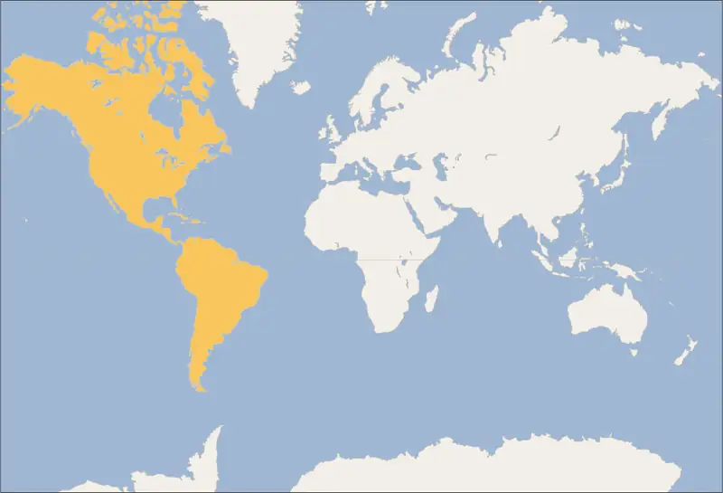
8.1 Populating and Settling the Americas¶
Learning Objectives
By the end of this section, you will be able to:
- Identify patterns of early migration to the Americas
- Describe the lifestyles of people living in Archaic America
- Explain how and when the Neolithic Revolution occurred in different regions of the Americas
Ancestral humans like Homo erectus migrated out of Africa almost two million years ago and made their way around Asia, the Near East, and Europe. But so far, no solid evidence has placed them in the Americas. It was only with the rise of Homo sapiens that the populating of the Americas began. Exactly when this occurred is not clear, but it likely started around eighteen thousand years ago at the earliest. Within a few thousand years, modern humans had expanded in small numbers around North America, Central America, and South America. There they developed their own agricultural traditions, independent of those that emerged in the Near East, China, and Africa. They also established a range of unique cultural traditions and later a number of sophisticated civilizations characterized by refined religious practices, monumental architecture, large urban populations, and in some cases, writing systems.
Populating the Americas¶
About eighteen thousand years ago, the last glaciation period was entering its peak stage, and sea levels globally were far lower than they are today. It was likely during this period that the first Homo sapiens reached the Americas, crossing the then-existing land bridge between modern Alaska and Russia known as Beringia. Beringia has since been consumed by rising waters and now lies under the Bering Strait. But then it was a low-lying land of sand dunes and spotty vegetation. It is possible that Homo sapiens had lived there for thousands of years before venturing into North America, but solid evidence for that theory has not yet been found.
Regardless of how long humans lived in Beringia or when they crossed, they began spreading farther south into the Americas as the glacial ice retreated. They made their way through a corridor between two melting ice sheets and spread out in waves into what is now the continental United States. Some made their way to the western coast. Others migrated into the northeast and southeast regions. Still others made their way through the center of the continent into modern Mexico, Central America, and South America. By around fifteen thousand years ago at the earliest, human populations had reached as far as the tip of South America and were living throughout the Western Hemisphere (Figure 8.4).
![A map of North and South America is shown, with the North Pole at the top. The Pacific Ocean is labeled in the west, the Atlantic Ocean in the east, and the Arctic Ocean in the north. A red arrow indicating “Land route” begins in Asia at the top left and heads south through North America along the western coast. In the middle of North America the line splits off in three directions. One line heads along the western portion of North America stopping along the coast before the middle of the two continents. The second one heads into South America where it splits off in three directions – east, southeast, and south. The third line heads southeast in North America and splits off in three directions – northeast, southeast, and south. A purple arrow indicating “Maritime route” is shown beginning in Asia in the water in the top left corner of the map and heading south along the western coast of North America in the Pacific Ocean and then along the coast of South America.](img/osx-worldhist-a08-01-m-ammigrat.webp)
Dueling Voices: Who Was Kennewick Man?
When two young men discovered a human skull along the Columbia River near Kennewick, Washington, in 1996, they assumed it was old. After an archaeologist retrieved the rest of the skeleton and analyzed it, however, people were shocked to realize just how old. Carbon dating revealed that the person now called Kennewick Man had lived nine thousand years ago.
The discovery of one of the oldest humans ever found in the Americas was just the beginning of the long and contentious history of Kennewick Man. Analysis of the remains revealed he was likely related to Asian groups that currently live in Japan and Polynesia. This startling finding caused a reevaluation of migration theories about the earliest Americans. It also stirred controversy and legal debate.
On one side were Native Americans who claimed Kennewick Man was one of their ancestors and should therefore be buried according to tribal custom. The Umatilla tribes of the Pacific Northwest insisted, “Our elders have taught us that once a body goes into the ground, it is meant to stay there until the end of time. If this individual is over nine thousand years old, it only substantiates our belief that he is Native American.”
On the other side were scientists. Although they understood the argument made by Native Americans, they maintained the find was so important to efforts to understand the past that they should be able to continue studying it. Anthropologist Elizabeth Weiss wrote in 2001, “Consider having dedicated a large part of one’s life to unearthing the materials that are now being examined. Even casts and other important works—such as videotapes, photos, and excavation records—are in increasing danger of confiscation. Some scientists have expressed fear that their federal grants would be in jeopardy if they objected too openly to current policies. Under such circumstances, most scientists do not even begin ‘high-risk’ projects.”
Despite scientists’ claims, Native Americans stood firm and began a protracted legal battle over the remains. In 2016, the U.S. Army Corps of Engineers resolved the issue in their favor with a DNA analysis that confirmed the remains demonstrated a sufficient genetic relationship with them. In 2017, the bones were buried according to tribal custom at an undisclosed location in Washington State.
- What do you think further analysis of Kennewick Man might have revealed about his origins?
- Do you support the decision to allow the Native American groups to rebury the remains? Why or why not?
There are aspects of the migration we may never fully understand but can be fairly certain happened. It is very likely, for example, that some populations moved down the west coast via a combination of land travel and coastal skirting by raft or canoe. Solid evidence has not yet been discovered, however, because at that time the coast extended a number of miles west of its current location. As sea levels rose following peak glaciation, the water covered these routes in the same way it covered Beringia. Yet we do have evidence for later coastal travel along similar routes. And these 10,000-year-old sites, discovered on high ground in coastal Alaska and Canada, have convinced many that similar and older evidence may now be beneath the sea.
The Clovis People¶
As long as thirteen thousand years ago, groups of hunter-gatherers had spread across North America south of the remaining ice sheets. Named after the site in Clovis, New Mexico, where the first evidence of their existence was discovered, the Clovis culture consisted of mobile bands of hunter-gatherers who camped at resource-rich locations in modest-sized populations. Since the earliest discovery in the 1920s, archaeologists have found many other sites traceable to Clovis culture in Texas, Virginia, South Carolina, Oregon, and Pennsylvania. Recent DNA analysis conducted on remains discovered in Central and South America suggest that the Clovis culture also extended far to the south.
The most striking artifacts the Clovis people left behind are the many finely worked, fluted stone points they made. They created these so-called Clovis points by chipping and shaping various types of high-quality stone into sharp-sided projectiles, which they attached to shafts that were probably made of wood (Figure 8.5). Once assembled, the tools could serve as spears or other types of thrown hunting tools like darts. These weapons were part of a larger Clovis toolkit that included hand axes and implements made of bone. Items that were small and portable were a necessity for a people regularly on the move.
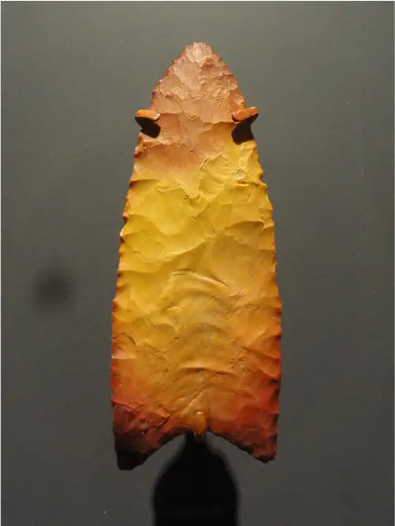
As they migrated, the Clovis people hunted mammoths, mastodons, giant bison, and many small animals. They likely also fished in coastal waters and in lakes and rivers. The places where they did settle for long periods typically had reliable access to fresh drinking water, animals for hunting and fishing, and rocks for making their signature points. Archaeologists have even discovered burial sites that appear to have been carefully designed and decorated with red ocher, a native earth containing iron oxide, suggesting a spiritual belief that required occasional ritual burial.
The world in which the Clovis people lived held a great variety of large animals like giant sloths, bears, tortoises, lions, wolves, beavers, armadillos, and various types of large bison. Then, about the same time people began migrating and hunting across North America, these giant species all went extinct. Some have argued that overhunting by the Clovis likely caused the extinction. An alternate hypothesis, however, suggests that rapid temperature rise at the end of the last ice age was the primary culprit. Both theories have weaknesses, and the debate continues. However, it seems at least plausible that both human intervention and climate change were factors.
The Clovis culture that spread across North America around thirteen thousand years ago vanished after only a few centuries. Its people settled in a number of different areas and produced new cultures as they responded to the environmental conditions in which they found themselves. These groups were then joined by other waves of migrants spreading across the Americas and settling in different areas. Between 9000 and 2000 BCE, during what is called the Archaic period, a great many different cultural traditions existed across North America and Mexico, Central America, and South America. They adapted to their many geographical settings: the Pacific Northwest, the Great Plains, the Eastern Woodlands, the Southwest, the jungles of southern Mexico and Central America, and the Andes region of South America.
Peopling the Pacific Northwest¶
The groups that settled along the resource-rich Pacific Northwest developed into complex hunter-gatherer societies keenly adapted to the abundant marine life in the region. They likely migrated into the area by following caribou, which they hunted. Once they settled in the densely forested region, they learned to survive on beaver, elk, seals, birds, sea lions, and salmon and a great many other fish species.
Salmon were an important resource. When they migrated upstream in the fall to spawn, they were so numerous they could be easily captured with traps, crude dams, or spears. They were then eaten immediately or dried to preserve the food for later. Halibut was another important fish species the peoples of the Pacific Northwest made into a staple of their diets.
The landscape also provided a great many resources for tools. From bone, the hunter-gatherer peoples designed harpoons useful for hunting large marine mammals like whales. They polished the rocks from the region into woodworking tools and used them to carve dugout canoes from the available trees. They also perfected a sophisticated woodcarving technique for producing art, created special bone and wood fishhooks, and used certain types of tree bark to create cloth and baskets.
Because of the great abundance of resources along the Pacific Northwest coast, the groups that settled there could accumulate wealth far more easily than many other hunter-gatherer societies. We know they developed complex societies in which wealth and social status were connected. Evidence from the few discovered burial sites dating to around 2000 BCE supports the suggestion that wealth contributed to social differentiation even then. In the burial sites of the very wealthy, for example, archaeologists have found carved tools made of antler and other objects made from shells. As time went on, the graves of the wealthy came to include even more objects indicating their higher social status. There is also evidence of high population density in some areas, made possible by the large supply of food resources and the ability to accumulate and store them.
Peopling the Great Plains¶
Within the expansive Great Plains region in the center of the North American continent, settlers hunted large bison herds that grazed on the short grasses growing there. Unlike the animals hunted by the Clovis people, the bison were able to adapt to the warming climate conditions and flourished in the plains. The groups that followed and lived off them practiced a seminomadic lifestyle requiring relatively few belongings; thus, their culture had far less social stratification than existed in the Pacific Northwest. Hunting bison was dangerous and required keeping a distance in order to not startle the animals or allow them to grow reflexively fearful of human presence. We know from archaeological sites in central Canada, Texas, Montana, Wyoming, and Colorado that as long ago as 8000 BCE, hunters used a strategy of driving herds of bison over cliffs to their death. Once the animals had been killed or immobilized in this way, sometimes by the hundreds, the hunters could carefully process the carcasses for their meat, bones, and hides. Other strategies included cornering the bison herds in a way that allowed the hunters to approach them with spears.
In addition to bison, the plains peoples also hunted antelope, deer, and small animals like rabbits and birds. Hunting birds sometimes required the use of bird decoys designed with feathers to allow hunters to approach and make the kill. The hides of some animals, especially soft ones like rabbit, could be used for clothing when stitched together with plant materials. Edible plants included various types of seeds, berries, nuts, acorns, and tubers like yampa and biscuit-root, which could be unearthed with digging sticks. People carried and stored these foods in coiled baskets made of plants or bags made of leather.
Peopling the Eastern Woodlands¶
To the east of the Great Plains lie the wetter and lusher Eastern Woodlands, extending from the Mississippi River basin to the Atlantic coast. The groups that lived there found a great variety of plants and animals to feed on and exploit. The many rivers and lakes of the region provided fresh water that encouraged settlement along their shores. The same was the case with the oxbow lakes, U-shaped pools created as river courses stabilized in the warmer conditions. These locations also served as excellent hunting and fishing grounds for catfish, deer, birds, rabbits, and many others. Edible plants included nuts from oak, chestnut, and beech trees. Near coastal areas, there was access to saltwater marine life.
Not only was there less need for mobility here, so that settlements could be sustained, but populations also began to rise around 6500 BCE, and people constructed large earthworks in Arkansas, Louisiana, Mississippi, and Florida. The oldest discovered, Watson Brake in northern Louisiana, dates from around 3900 BCE and includes several human-made earth mounds as high as twenty-five feet and set in a circular formation. Archaeologists believe the site was likely used by hunter-gatherers on a seasonal basis. While no burial remains have been found there, large cemeteries from the period have been discovered in many other woodland locations including Illinois and Tennessee. Some sites include the remains of more than a hundred individuals, some with personal items like weapons and art. They are evidence of not only rising populations but also an increasingly sedentary lifestyle.
Peopling Mesoamerica¶
To the south and west of the Eastern Woodlands, the climate is much more arid and less green. This desert scrubland extends down the center of Mexico to the tip of the Central Mexican Plateau. South of there, in the region often described as Mesoamerica, the environment is warmer, greener, and wetter. The formerly large-game-hunting peoples settled there after around 8000 BCE as the game disappeared and the bison followed the retreating grassland north. Evidence of Archaic peoples in this area has been found in several coastal sites along the Gulf of Mexico and the Pacific Ocean, as well as in the Tehuacán Valley south of modern Mexico City. They lived largely in small groups and hunted and gathered over large areas. During the dry season, they relied mostly on wild game like lizards, snakes, and insects, and edible plants like the agave. During the rainy season, they ate avocados, nuts, various types of fruit, and small game, like rabbits.
Beginning around 8000 BCE, some groups of hunter-gatherers began periodically occupying a site known as El Riego Cave in the Tehuacán Valley. Excavations there have uncovered numerous stone tools, woven baskets and blankets, and even elaborate burial sites. These burials suggest the existence of a complex spiritual practice. Other evidence in the Tehuacán Valley indicates that by around 5000 BCE, the settlers’ earlier reliance on wild game had given way to a more plant-based diet that included beans, squash, maize (corn), and bottle gourds. By 2600 BCE, the gathering of wild plants had waned considerably as groups adopted agricultural practices, cultivating maize, beans, and squash.
Peopling the Andes Mountains Region¶
The Andes Mountains run along the western side of South America, rising to more than twenty-two thousand feet in some areas and punctuated by arid deserts and dozens of rivers. It is unclear when the first humans reached South America. At the Monte Verde site in Chile, archaeologists excavating a peat bog recovered remnants of shelters, butchered animal remains, and even scraps of clothing made from hides. Testing dates these to about 12,000 BCE, well before the arrival of Clovis culture in the north. It is unclear exactly what this information means, and it leaves the story of how the Americas were populated incomplete. But whenever they came, the first hunter-gatherers who arrived appear to have spread quickly down the continent, likely because its unique geography encouraged north–south rather than east–west migration (Figure 8.6).
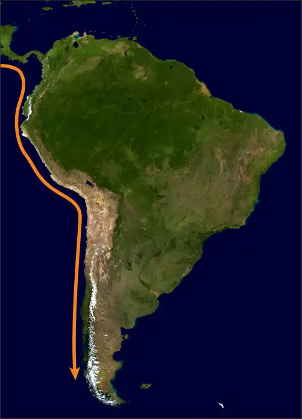
The earliest hunter-gatherer groups reached as far as southern Chile and often camped near streams to hunt llamas, guanacos (similar to llamas), and deer. By 8000 BCE, some had begun regularly occupying certain sites. One such site is Guitarrero Cave, located at an altitude of 8,500 feet near the small town of Mancos in central Peru. There, archaeologists have recovered projectile points, modified bone and antler, and textiles. Those who lived in and around Guitarrero Cave likely survived by hunting animals and gathering beans, peppers, and a variety of tubers. In the narrow, low-lying areas along the Pacific coast, people relied on marine resources like fish and mollusks. The site called Quebrada Jaguay in coastal southern Peru may have been used by fishers as early as 10,000 BCE. There, archaeologists have discovered what are believed to be cord and fishing nets as well as the remains of fish and other exploited marine life. Obsidian found at the site, originating about one hundred miles away, is even more surprising; it suggests that long-distance trade may have been occurring in the region many thousands of years ago.
Beyond the Book: The Chinchorro Mummies
The Chinchorro settled in coastal Chile and southern Peru around 5800 BCE. They were largely fishers who left evidence in the form of fishing hooks and harpoons. However, their most striking cultural feature was their practice of mummifying the dead. Indeed, the oldest mummies known so far were those created by the Chinchorro, predating Egyptian mummies by at least two thousand years (Figure 8.7).
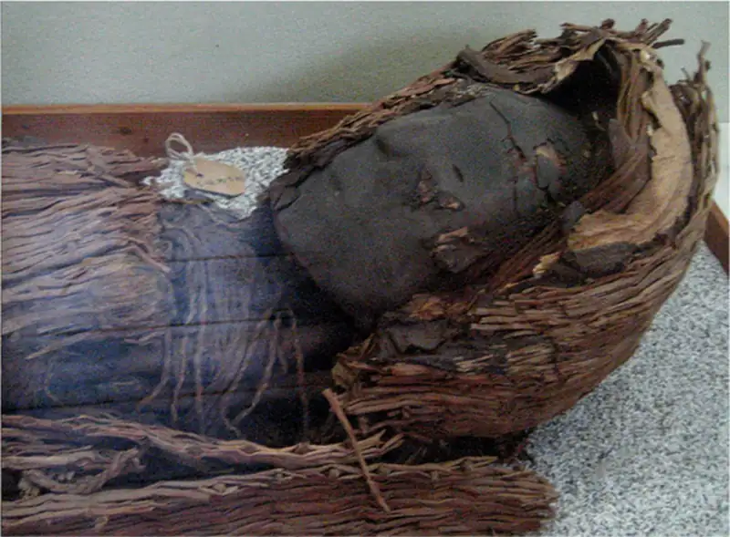
The organs of the dead were removed and replaced with reeds and clay to help dry the bodies and complete the mummification process. Once dry, the bodies were painted and adorned for burial. A clay mask was placed over the faces. The oldest Chinchorro mummy discovered dates from about 5000 BCE and was painted black before burial. Around 2500 BCE, the Chinchorro began painting their mummies red and using different methods for removing organs. They also appear to have aided drying by heating the bodies with hot coals. By around 2000 BCE, the process changed again, and the mummies were left unpainted.
The Chinchorro have not left records to explain why they created mummies, so scholars study more recent Andean mummification practices to try to understand. For example, we know from Spanish records that on certain festival days, the Inca, who ruled Peru thousands of years after the Chinchorro, decorated the mummified bodies of their old rulers and displayed them publicly, feeding them cups of corn beer. Scholars believe these ceremonies were intended to help the deceased transition to the afterlife. Might the Chinchorro mummies have served a similar purpose?
Some Chinchorro mummies had clay face masks with open mouths. It is possible these aided in feeding ceremonies, not unlike the later Inca rituals. Evidence also suggests the Chinchorro mummies were occasionally repainted and repaired, leading some to conclude they were a type of religious art form and possibly used to communicate with the afterworld or to celebrate certain gods or ancestors.
We may never fully understand the mummies’ significance for the Chinchorro. But it seems clear the process was somehow related to spiritual practices, possibly an indication of ancestor worship or even belief in an afterlife.
- How does the Chinchorro mummification practice reflect a connection between culture and environment?
- Why do you think the process for painting and preparing the bodies of the dead changed over time?
The Neolithic Revolution in the Americas¶
As noted earlier, Beringia was submerged under the Bering Strait about eleven thousand years ago, effectively cutting off the Western Hemisphere from the rest of the world. For this reason, technological and cultural developments in Asia, Africa, and Europe were not disseminated to the Americas for many thousands of years. Nor did similar developments in the Americas reach the Eastern Hemisphere. This meant the shift to agriculture in North and South America occurred entirely independently, in three distinct regions that developed agricultural traditions of their own. These were the Andean region, Mesoamerica, and the upper reaches of the Mississippi River valley in the Eastern Woodlands.
The earliest evidence for the shift to agriculture, or the Neolithic Revolution, in the Americas has been found in the Andean region (Table 8.1). There, the domestication of plants and animals developed piecemeal and gradually, and its precise origins are not entirely clear. In some parts of the region, the domestication of camelids such as llamas, guanacos, and alpacas for meat and later wool may have begun as early as 7400 BCE. Similarly, the domestication of the guinea pig for food may have begun as early as 6200 BCE, or as recently as 4400 BCE depending on the evidence used. As for edible plants, some discoveries place the earliest cultivation of squash and bottle gourds at around 8000 BCE. The dates scientists have discovered for domesticated plants like the potato are also remarkably early. Genetic testing of the potato indicates that this rugged tuber may have been domesticated from a wild variant between 8000 and 6000 BCE. Another Andean cultivated plant, quinoa, may have been grown as animal feed about 5000 BCE and later eaten by humans.
Table 8.1 The Neolithic Revolution in the Andean Region. The earliest evidence for the domestication of plants and animals in the Americas comes from the Andean region.
| 8000 BCE | Domestication of squash and bottle gourds |
| 8000–6000 BCE | Domestication of the potato |
| 7400 BCE | Domestication of camelids (llamas, guanacos, alpacas) |
| 6200–4400 BCE | Domestication of the guinea pig |
| 5000 BCE | Domestication of quinoa |
Regardless of when or how the process began, by 3000 BCE, at least partially settled agricultural communities were becoming more common in the Andes region. The similarities among sites in central coastal Peru have led archaeologists to describe them as belonging to one larger culture, sometimes called the Norte Chico or the Caral civilization. A few sites were quite large, such as Aspero, El Paraiso, and Caral (Figure 8.8). Each included multiple mounds and was topped by architectural complexes arranged in a U-shaped pattern. Of the three, Caral is the largest, with a great number of mounds spread across a large area. The largest mound, or the main temple, measures ninety-two feet high and is almost five hundred feet long at its base. Building such a mound would have required a dedicated workforce, suggesting a highly organized society.
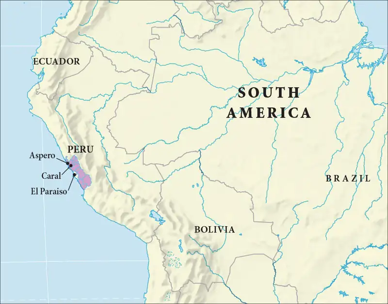
Archaeological evidence indicates that the people who lived at Caral relied primarily on fish and both wild and domesticated crops, such as squash, beans, avocados, and potatoes. As for the social organization of the Norte Chico, we can only speculate, but based on an examination of the burial sites and the likely ritual significance of many of the ruins, there appear to have been social divisions and organized spiritual or religious practice (Figure 8.9). Given the large-scale architecture and the need for laborers, it is also almost certain there was some type of powerful hereditary leadership. And, apart from the structural similarities across the different sites, evidence suggests there were connections between them. For example, the smaller sites along the coast appear to have supplied the larger inland Caral site with necessary marine resources. There may then also have been some type of ruling system over all the various sites, rather than just a similar culture that united them. However, there is no solid evidence to date to support that conclusion.
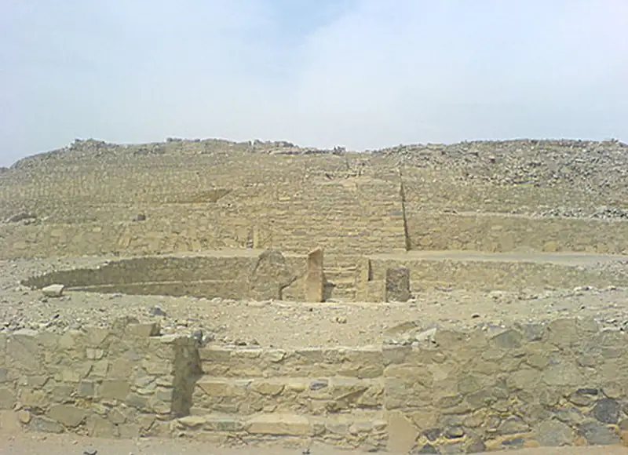
Given the great distance and climate differences between the Andean region and Mesoamerica, the agricultural traditions developed in South America were not easily disseminated north into Mesoamerica in Neolithic times. However, it does appear that at least one important Mesoamerican domesticated crop did reach the Andes. This crop was maize, colloquially called corn in the United States. Maize was domesticated from a type of wild edible grass known as teosinte between 5000 and 3000 BCE. While debate continues about how exactly that process occurred, it is generally accepted that human intervention transformed the thick wild grass into the large, sturdy, cob-producing plants we know today. Once domesticated, maize became an important staple carbohydrate in Mesoamerica and led to the rise of large populations. The earliest domesticated maize emerged in either the Tehuacán Valley or the highlands of Oaxaca, from which it was disseminated around Mesoamerica and eventually far beyond. Evidence for Mesoamerican maize in the Andean region dates to about 1600 BCE. There it was commonly used to make a fermented alcoholic drink and popcorn, but it never became an important part of the diet in the way it did in Mesoamerica.
By around 2500 BCE, a shift toward cooler and wetter conditions in Mesoamerica, combined with the availability of domesticated maize, gave birth to a number of agricultural villages in the region. The residents of these villages typically continued hunting and gathering, but they soon recognized the great advantage of growing maize. Over time, the labor demands of doing so and the caloric value of maize led to a steady decline of gathering activities, resulting in exclusively sedentary agricultural communities. Populations grew, necessitating more farmland to raise even more maize. In this way, maize cultivation expanded across the core regions of Mesoamerica, including southern Mexico and parts of Guatemala. By 2000 BCE, sedentary agricultural settlements had become common across these areas. As occurred in regions around the world during the shift from hunting and gathering to sedentary agriculture, new social hierarchies developed as work became more specialized. These hierarchies were related to not only wealth accumulation but also the rise of leadership power.
At some point in the late third millennium BCE, maize was eventually disseminated to what is now the southwestern United States. There, groups began using a form of the plant that had been adapted to the drier environment. At this time, it was merely a supplement to other gathered plants, so peoples in this area remained mostly migratory for some time. Over many centuries, they experimented with varieties of maize. They found ways to grow it in high-elevation areas, and they discovered which areas produced the best results, such as floodplains where irrigation occurred naturally.
In the Eastern Woodlands, people had been experimenting for thousands of years with naturally occurring edible plants like goosefoot, sunflower, bottle gourds, and squash (Figure 8.10). The use of bottle gourds as containers was an ancient practice in the Eastern Woodlands, and the cultivation of bottle gourds may have been encouraged as long ago as 5000 BCE. Similarly, the domestication of sunflowers, useful for their oily and nutritious seeds, appears to have begun by about 2300 BCE. However, by about 2000 BCE, groups in this region began making concerted efforts to increase their food supply by altering the physical environment, clearing small plots of land to more carefully cultivate these wild plants. Through migration, some transported seeds for certain plants to other areas. Successful techniques for encouraging the growth of these plants were passed from generation to generation. In this way, agricultural cultivation emerged in the Eastern Woodlands independently.
By the time Eastern Woodlands peoples began cultivating their own native plants around 2000 BCE, they had also begun living in more clearly defined territories. Yet there was communication and trade between different areas. Certain types of stone, copper materials, and shells from the coastlines could pass from one small group to another and in the process move many hundreds of miles. Groups from around a localized region may also have participated in certain ceremonies together. Over time, the increasing availability of food and exposure to wealth in the form of traded materials led to social transformations like a reduction in the egalitarianism common among hunter-gatherers. Burial sites and the increasing number of earthen mounds built from the period demonstrate this.
Groups in the Eastern Woodlands remained small, likely no more than one hundred or so members in most places. There were a few exceptions, such as at the large Poverty Point site in northern Louisiana (Figure 8.11). There, beginning around 1000 BCE, several U-shaped concentric mounds were constructed to form an impressive and unusual ceremonial site. The exact purpose of the site and the social organization of the people who built it are not known, but it likely had some ritual significance, and those who lived in and around it employed both hunter-gatherer and agricultural strategies. It was an active site for about three hundred years before being abandoned for reasons unknown.
![(a) An aerial picture and (b) a map are shown. (a) The black and white photo shows a forested area with a white road running in the picture from the bottom left to the top right. Flat lighter areas are strewn amidst the forested areas. “U” shaped lines are seen to the left of the road, some flat and some with trees. (b) A map is shown on a beige background. A hook-shaped thick blue line is labeled “Bayou Macon River” running the length of the right side of the map. Six rows of “C” shaped intermittent pink lines run to the left of the Bayou Macon River. The area in the space of the C is labeled “Plaza” while the individual lines are labeled “Ridges.” Toward the bottom of the second row is a circle shape attached to the gray line labeled “Mound D.” A rounded small rectangular shape sits to the left of the Bayou Macon River and is labeled “Mound C.” A small gray circle is located to the top right where the river hooks and is labeled “Mound F.” Another round gray circle is at the top left just south of the zig-zag lines and is labeled “Mound B.” A large rounded gray triangle shape is located behind the Ridges and is labeled “Mound A.” A small gray shape is located at the bottom and labeled “Mound E.”](img/osx-worldhist-a08-01-m-povertyp.webp)
8.2 Early Cultures and Civilizations in the Americas¶
Learning Objectives
By the end of this section, you will be able to:
- Describe how civilizations in the Americas adapted to their environments
- Discuss the contributions of the Olmec civilization to culture and religion in Mesoamerica
- Identify the key components of early cultures in North and South America
At the start of the third century BCE, after thousands of years of hunter-gatherer existence, the peoples living in the Americas began to form complex agricultural-based societies. Over the next few thousand years, the early settled communities gave way to large and architecturally impressive settlements from the Andean region to the Eastern Woodlands of North America. These led to local similarities in art, architecture, religion, and pottery design.
Complex Civilizations in Mesoamerica¶
By the year 1200 BCE, farming had become well established across southern Mexico, especially in the gulf lowland areas where there was sufficient water for irrigation. The many societies there were not exclusively agricultural; they continued to rely on hunting and gathering to supplement their diets. One of them, the Olmec culture, emerged around this time as Mesoamerica’s first complex civilization with its own monumental architecture.
Olmec Culture¶
The start of the Olmec civilization, at a site known as San Lorenzo in the modern Mexican state of Veracruz, stretches back to about 1350 BCE and the construction of a large earthen platform rising some 164 feet above the flat landscape. Upon this platform, the Olmec built ceremonial and other structures, water reservoirs, a system of drains, numerous stone works of art, and a number of massive sculpted stone heads. One of the structures has become known as “the red palace” because of the red ocher pigment on the floor and walls. It was likely a residence for the elite and included large stone columns and aqueducts. The massive stone heads and other sculptures, some weighing as much as fifty tons, were carved from volcanic basalt that came from as far as ninety miles away and was likely brought by raft for part of the way and on rollers over land.
Because little of the San Lorenzo site remains, we can only speculate about the organization of the Olmec civilization, but it is clear that their civilization shaped those that followed. For example, the great earthen platform and monumental sculptures shaped liked step pyramids attest to a highly sophisticated culture, with a clearly defined elite that could control large labor forces. Relying on pottery fragments and population density estimates, scholars have concluded that most workers were probably free laborers working to accomplish larger goals. They likely lived well beyond the elevated center reserved for the elite, in villages surrounded by gardens and other agricultural zones where the Olmec grew maize, avocados, palm nuts, squash, tomatoes, beans, tropical fruits, and cacao for chocolate.
The stone heads themselves are remarkable (Figure 8.12). Seventeen have been found across all the Olmec sites; some stand eleven feet tall. All are generally similar in form and style, depicting men’s faces with large lips and noses with flared nostrils, but they were likely intended to be realistic portraits of rulers of the sites where they were discovered. Upon their heads are helmets of various styles, some with coverings for the ears. Given the effort required to transport the stone and carve the heads, these works were likely intended to emphasize the power of the rulers, both to the Olmec people and to outsiders.
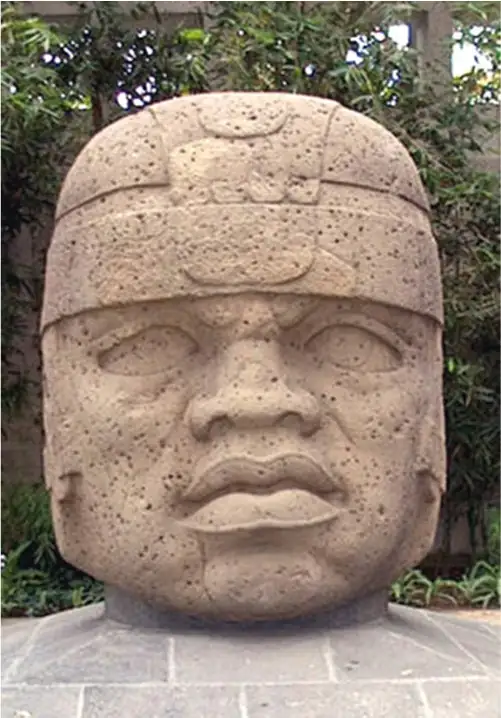
Evidence of possible vandalism on some of the heads has led some scholars to suspect an invasion occurred in the tenth century BCE, with desecration of the images as a result. Others, however, believe this is evidence of reworking that was never completed. We may never know for sure, but we do know that during the tenth century BCE, San Lorenzo declined in importance. At the same time, another Olmec site rose in significance, some fifty miles to the northeast at La Venta.
La Venta was built around 1200 BCE on a high ridge above the Palma River less than ten miles from the Gulf of Mexico. By 900 BCE, it had become the dominant Olmec city in the region. At its height, La Venta covered almost five hundred acres and may have supported as many as eighteen thousand people. Its central monuments included several large earthen mounds, plazas, a possible sports arena, several tombs, and numerous stone heads and other sculptures. The complexity of this urban complex reflects a major development in Mesoamerican civilizational and architectural design. It was likely built as a sacred site, with its temples and other complexes organized on a north–south axis believed to enhance the rulers’ authority by connecting them to supernatural environments. This style of urban design was later adopted by other Mesoamerican civilizations like the Maya.
Olmec art depicts numerous deities, such as a dragon god, a bird god, a fish god, and many fertility deities like a maize god and water gods. The Olmec also clearly recognized many types of supernatural mixed beings, like a feathered serpent and the were-jaguar, a cross between a jaguar and a human. These artistic images imply that the Olmec had a sophisticated pantheon of gods who controlled the universe and expected certain rituals be performed, perhaps by Olmec leaders themselves, who may have functioned as shamans empowered to communicate with the spirit world. The rituals were performed in the temples and plazas of the sacred cities like La Venta and San Lorenzo, as well as in sacred natural sites like caves and mountaintops.
Other rituals were connected to a type of ball game played in a special court with balls made from the abundant natural rubber of the region. Sports contests often existed to bring communities together, to allow men to show prowess and strength in times of peace, and to entertain. It is also likely that in times of heightened spiritual need, such contests could take on greater meaning and might have been choreographed to play out supernatural narratives and perhaps connect people to the gods. Like some later civilizations, the Olmec also saw bloodletting as a link to the spirit world. Blood sports may have been used to create pathways to understanding the will of their gods.
Link to Learning
The ritual ball game of the Olmec became a cultural feature of Mesoamerica over the centuries, and various forms of it were played by the Maya, the Aztec, and many others. Read more about the history of the Mesoamerican ball game and see pictures of related artifacts from different Mesoamerican cultures at the Metropolitan Museum of Art website.
The Olmec were clearly in contact with other groups around southern Mexico and Central America. There is evidence of a robust trade in pottery and valued materials like obsidian, magnetite, and shells, likely carried out by merchants traveling across the larger region. Over time, this trade exposed other Mesoamerican cultures to Olmec ideas about religion, art, architecture, and governance. Some scholars thus conclude that Olmec civilization was a “mother culture” for later large and sophisticated Mesoamerican states. Cultural similarities exist among these, such as ritual ball games, deities, and calendar systems. Olmec-style artifacts have also been found at sites as far away as what are now western Mexico and El Salvador. Like much related to the Olmec, however, the extent of their influence is a question we may never answer with certainty. By the time this civilization disappeared around 400 BCE, a number of other Mesoamerican cultures were emerging.
The Zapotec civilization appeared in the valleys of Oaxaca in western Mexico beginning around 500 BCE, with the construction of the regional capital known today as Monte Albán (Figure 8.13). Set on a flattened mountaintop overlooking the larger region, Monte Albán likely had a population of about five thousand by around 400 BCE and as many as twenty-five thousand by around 700 CE. As it grew over the centuries, so too did its stone temples and other complexes. The city exerted influence on the hundreds of much smaller communities scattered across the Oaxaca Valley. The region was highly suitable to maize cultivation, thus allowing for larger populations and monumental architecture. From the defensive walls created around their settlements, it seems the Zapotec lived in a world where warfare was especially common. Monte Albán itself was likely selected for defensive reasons.
![A picture of a large expanse of green land is shown with large mountains in the background. In the forefront a rectangle shaped stone is standing upright with drawings etched all over. To the right is a square section of land sitting lower in the ground, surrounded on the inside by stone bricks and grassy walls. Inside the area in the middle is a square flat section of stones with stairs on one side and grass growing over the rest of the stones. At the back of the lower area are stairs that lead up to higher ground where twelve round stumps of stones stand in two rows. Heading toward the back of the photo there are ruins of many square shaped buildings with stairs leading up to the top. One very tall and large half-triangle structure stands in the back left with stairs seen on the front and mounds of dirt and bushes along the top. Trees are scattered behind the structures and one lone large tree is seen in the middle left of the image.](img/osx-worldhist-a08-02-montealban.webp)
The structures built at Monte Albán after 300 CE reflect the influence of another major Mesoamerican civilization about thirty miles northeast of Mexico City. The massive city of Teotihuacán dominated trade in obsidian, salt, cotton, cacao, and marine shells across southern Mexico and greatly influenced cultures like that of the Zapotec. The origins of the Teotihuacán settlement date to about 400 BCE, but major building at the site did not begin until centuries later. By 300, the growing city had a population of about 100,000, making it one of the largest cities in the world at the time (Figure 8.14). It exercised enormous cultural and military influence across large portions of Mesoamerica until it declined in the sixth and seventh centuries CE.
![An aerial photo is shown of stone ruins of a city. In the front the ground shows a flat, square, stone area. To either side a four-tiered grayish brown structure stands with large stairs on one side leading to the top, which is flat. Next are three more identical structures set back on both sides as well with a large open dark area of ground in between. A square flat pedestal sits in the middle with a set of stairs facing the front. Next on both sides are two, tiered structures, facing forward, set in closer together with a dirt road beginning between them. As the road goes off into the distance, it is lined with the more tiered structures, in single rows, on both sides. Behind these single structures on the right are trees and other building in in the distance. On the left behind the structures are some trees and then a very large pyramid shaped stone structure behind the trees. The rounded, stone top flattens out and no windows or doors are visible. People are scattered in the open area and walking down the dirt road. The far background shows trees, a city, and mountains.](img/osx-worldhist-a08-02-teotihuac.webp)
The Teotihuacanos built numerous stone temples and other structures organized around a north–south passageway known as the Avenue of the Dead. The largest temples are known as the Pyramid of the Sun and the Pyramid of the Moon. Both are multitiered stone structures, 197 and 141 feet tall, respectively. The site also includes a large royal residence known as the Citadel, which includes the elaborate Temple of Quetzalcoatl, the feathered serpent. Elite military leaders and others lived in large apartment compounds decorated with colorful artwork depicting priests, gods, or warriors. The remaining population was spread across the roughly ten thousand square miles that surrounded the city and produced trade goods as well as agricultural products.
The size of Teotihuacán denotes its wealth and regional influence at its height. This wealth came from trading in crafts, agricultural products, obsidian tools, cloth, ceramics, and artwork. The many preserved frescos and murals show the city’s rulers dressed in elaborate clothing, including iridescent quetzal bird feathers from as far away as Guatemala, testifying to Teotihuacán’s long reach. To influence areas so far away, the city wielded power through its control of trade and use of military force and diplomacy. Sculptures at Monte Albán show Teotihuacano diplomats meeting with the Zapotec elite, reflecting mostly peaceful contact between the two civilizations. Evidence from Maya sites also demonstrates that the Teotihuacanos commonly intervened in Maya affairs deep in Central America, sometimes militarily. They may even have orchestrated a coup in the powerful Maya city of Tikal in 378.
Maya Culture¶
While Maya civilization was clearly influenced by the Teotihuacanos beginning in the fourth century CE, evidence of urban development and rapid population growth in the Maya heartland of Central America dates to before 600 BCE. Village life may go back much further, but in any case, by 600 BCE, the lowlands of Central America were full of small villages, each showing evidence of sophisticated pottery, architecture, irrigation techniques, and religious traditions. By 250 BCE, a handful of powerful Maya city-states had emerged. The major cities of this Early Classic period (250–600 CE) include Tikal, Calakmul, El Mirador, and a few others.
El Mirador was a dominant city before 150 CE, with a population of about 100,000 at its height. But Tikal and Calakmul were equally impressive. All had numerous large pyramid-like structures creating an impressive skyline across the spaces cleared of jungle. Most of the major cities were built next to large, shallow lakes, since access to water for drinking and irrigation was important in the lowlands, where rainfall was often insufficient. The tropical soil in the area is also insufficiently fertile, and the Maya developed a style of slash-and-burn agriculture to raise maize, squash, beans, and cacao for the growing urban populations in these cities.
Link to Learning
Tour the ruins of Tikal by exploring this immersive video.
The Maya were certainly influenced by Olmec civilization, though likely not directly. For example, some examples of Maya art include Olmec-derived features like the were-jaguar. The Maya also played a ritual ball game based on the earlier Olmec variety. Another possible Olmec influence was the Maya calendar. This consisted of two different parts—the 260-day Sacred Round calendar and the 365-day Vague Year calendar—that functioned together to create a 52-year cycle for measuring time and tying the dates for ceremonies to important mythological events performed by the gods.
Link to the Past: Did the Maya Predict the End of the World?
The premise of a 2009 science fiction movie was that the Maya calendar predicted the end of the world would occur in the year 2012. While the film (called 2012) was a commercial success, the idea that the Maya predicted when the world would end has been largely discredited.
The Maya had a sophisticated calendar system evolved from earlier Mesoamerican versions, possibly the Olmec. Because it used two different calendar rounds working together, it revealed important ritual days and cycles over long periods of time (Figure 8.15). For example, one full cycle covered a space of fifty-two solar years, often called a bundle. But to explore longer chunks of time, the Maya relied on what scholars call the Long Count Calendar. This had cycles that included the winal (20 days), the tun (360 days), the k’atun (7,200 days), and the bak’tun (144,000 days). The Great Cycle occurred every thirteen bak’tun, or about every 5,125 years. And this is where the idea of the significance of 2012 comes from.
![A black and white drawing is shown. At the left the letter “A” is written. Next a curved arrow points to the left with feathers on the end. In curved writing, the following words and numbers are written in curved rows to match the arrows arc: 7 Manik, 6 Cimi, 5 Chicchan, 4 Kan, 3 Akbal, 2 Ik (which is encased in a drawn rectangle), 1 Imix, 13 Ahau, 12 Cauac, 11 Eznab, 10 Caban, and 9 Cib. A zig-zag line follows from the top to the bottom in the same curved arc. Another Zig-zag line follows in the opposite curved arc, beginning further at the top of the paper and running down to the bottom. The zig-zags meet in the middle and cross over each other forming a triangle which is highlighted with vertical lines. This triangle connects to the rectangle box that is drawn around the words “2 Ik.” Curved rows of the following words follow in the same arc as the zig-zag: 5 Pop, 4 Pop, 3 Pop, 2 Pop, 1 Pop, 0 Pop, 4 Uayeb, 3 Uayeb, 2 Uayeb, 1 Uayeb, 0 Uayeb, 19 Cumhu. Next, an arrow with feathers at the end curves in the same direction as the arc and words and then the letter “B” is printed at the right.](img/osx-worldhist-a08-02-mayacalen.webp)
According to scholars’ calculations, the Maya Great Cycle would have begun in 2012 CE. But did that really mean the Maya thought this was the end of the world? Most historians and archaeologists say the answer is a resounding “no.” Rather, that year would simply have started a new cycle, though the Maya would have seen great importance in the event and celebrated it with major festivities. It appears that only Hollywood and some imaginative modern writers have read an Earth-ending catastrophe into this date.
- What does the cyclical nature of the Maya calendar system suggest about their rituals and cosmology?
- Why do you think the concept of an apocalypse occurring in 2012 was so attractive to modern people?
The era of Maya greatness begins with the Classic period, starting around 250 CE and lasting until about 900. During this time, urbanization in the Maya world expanded greatly, with approximately forty different city-states emerging in different areas. Some of the most powerful were older sites like Tikal and Calakmul, along with newer locations like Palenque, Copan, Yaxchilan, and Piedras Negras (Figure 8.16). Each had its own rulers, referred to as “divine lords.” These powerful chieftains exercised their authority over the city-state through their control over religious rituals and ceremonies, the construction of temples, and especially wars they waged with other Maya city-states. Such wars were common for weakening rivals and keeping neighbors in line, and they may even have served important ritual purposes. They also allowed for the exacting of tribute from subdued enemies in the form of animal products, salt, textiles, artwork, and agricultural goods like cacao and maize. Tribute could be paid through labor as well, when defeated enemies supplied workers for the victorious city-state. Only rarely did rulers seek to control conquered city-states, however. These generally remained independent, though they all shared many cultural attributes.
![Two images are shown. (a) A map of Central America. The blue area at the north is labeled “Gulf of Mexico” and the “Gulf of Tehuantepec” along the southern middle of the land where it shows a rounded inlet. An area of blue is shown towards the southeast on the land and is labeled “Lake Nicaragua.” A small section of land is highlighted beige at the north and a section of the land northeast and southeast of Lake Nicaragua is highlighted beige. The rest of the land is highlighted green. In the middle of the green highlighted area these cities are labeled, from north to south: Calakmul, Palenque, Tikal, Yaxchilan, Caracol, Dos Pilas, Quirigua, Naranjo, and Copan. (b) A photo shows large, white and gray buildings in ruins set among green trees and grasses, overlooking a city in the far right background. The left foreground of the photo shows a maze of white stones set low to the ground with a three-tiered off-white stone building shown to its left with no roof. No windows or doors are visible. Trees are shown to the right of the maze. People are seen walking on a covered white road in the bottom right forefront of the photo, shaded by trees on the right side. In the middle left of the photo a tall pyramid-shaped tiered stone structure is seen with a domed square on top. No windows or doors are visible. In the middle right a large structure is seen on two raised platforms of stone and green grass covered ground. Stairs and partial stone walls surround the structure as well as arched doorways and entrances. The structure is ruined in some places on the first tier and portions of the second floor can be seen with some doorways and windows visible. A tall three tiered tower stands in the middle with one window seen on each visible side and a domed roof with points on each corner. A large building extends out behind the tower to the right edge of the photo, partially hidden by trees. Doorways can be seen as well as a tiered roof. Some white pathways can be seen beyond the buildings leading into the forested areas.](img/osx-worldhist-a08-02-m-mayapalenq.webp)
At the heart of Maya religious practices was the veneration of family ancestors, who were considered bridges between heaven and earth. Homes had shrines for performing ritual bloodletting and prayers directed to the ancestors, and deceased family members were typically interred beneath the floor. Indeed, the large stone temples themselves were in some ways grander versions of these family shrines, usually with large tombs within them, and deceased kings were effectively ancestors for the entire city-state. Ritual practices were tied to the complicated Maya calendar, and gods could act in certain ways depending on the time of year and the location of certain heavenly bodies. Shamans and priests guided rituals like bloodletting, which allowed for communication with the ancestors by releasing a sacred essence in the blood called chu’ulel. The same principle applied to the human sacrifice of war captives and especially captured rival leaders.
While we can only speculate about how the Olmec played their ritual ball game, we know more about the Maya and later versions (Figure 8.17). The intention was to reenact aspects of Maya mythology, and the game held a significant place in religious practice. Two teams of four wore ritual protective padding and passed the ball to each other without using hands or feet on long I-shaped courts flanked by sloping walls. The object appeared to be to move the ball through a stone ring without letting it hit the ground. As the use of padding indicates, the game could be quite dangerous; the ball was solid rubber and could weigh more than seven pounds. But the true danger came at the end, when losing team leaders or sometimes the entire losing team could expect to be sacrificed to fulfill the game’s ritual purpose.
![A photo is shown of gray and white stone structures set on green grassy lands with some trees visible at the edges and in the far background. In the top right a large six-tiered pyramid-shaped faded gray and white structure is shown with an angled section running along the left side. In front of the structure two rectangular-shaped gray stone structures lay parallel to each other low to the ground. Stairs can be seen at the front and the top tier is smaller than the bottom tier. A white path is seen running along the front of the photo in front of the two structures. Grasses grow atop the structure on the right as well as a lone tree with no branches. In the top left background small rectangle stones are seen on the ground. Heading into the back left of the photo a wide staircase laid into the ground leads to a flat area with a multi-tiered gray building with some domed and flat structures on the various levels. Many staircases and doorways can be seen. Some brown huts with beige roofs are shown within the structure.](img/osx-worldhist-a08-02-ballcourt.webp)
One of the reasons we know so much about the Maya is that, unlike some other Mesoamerican civilizations, they created a writing system that scholars have been able to decode and read (Figure 8.18). This system was phonetically based, with complex characters, and was far more developed than any other writing system discovered in Mesoamerica. It allowed the Maya to record their own history in stone monuments, including invaluable political histories, descriptions of rituals, propagandistic records of battles, and genealogies.
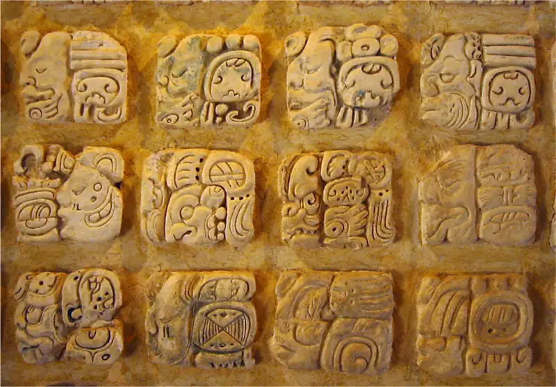
Classical Maya civilization entered a period of decline in the ninth century CE and then deteriorated rapidly. Over a period of about a century, alliances broke down, conflicts became more common, the production of luxury goods slowed to a stop, and cities went from thriving urban centers to depopulated shells. The reason for this collapse has been a topic of debate among historians and archaeologists for many years, and much remains uncertain. Among the proposed causes are epidemic diseases, invasions, natural disasters, internal revolutions, and environmental degradation. Several of these may have been influential; it is unlikely there was a single cause.
For example, studies over the last few decades have pointed to the environmental problems created by demographic growth. This growth led to large-scale deforestation, which in turn produced soil erosion. Large populations that required high agricultural yields made Mayan civilization more vulnerable to variations in climate or a string of bad harvests caused by crop disease. Such problems would have put enormous pressure on elites and commoners alike and contributed to disorder, war, and perhaps internal revolts. However it happened, by 900 CE the Classic period of Maya civilization had come to an end. But this was not the end of the Maya. In the Yucatán Peninsula, well north of the old centers of power, Maya civilization would experience a rebirth that extended into the sixteenth century and the arrival of the Spanish.
Early Cultures and Civilizations in South America¶
South of Mesoamerica and north of the Andes lies a dense tropical jungle that long prevented any regular communication or cultural transmission between the two areas. As a result, the early cultures and civilizations in South America developed in different ways and responded to different environmental factors. Neolithic settlements like Norte Chico in today’s Peru had already emerged by 3000 BCE. However, in the centuries following this, others proliferated in the Northern Highlands as well. These include sites known today as Huaricoto, Galgada, and Kotosh, which were likely religious centers for offering sacrifices. There was also Sechin Alto, built along the desert coast after 2000 BCE. Then, around 1400 BCE, groups in the Southern Highlands area around Lake Titicaca (on the border between Peru and Bolivia) began growing in size after adopting agricultural practices. The construction of a large sunken court in this area around 1000 BCE indicates they had their own sophisticated ceremonial rituals.
Around 900 BCE, the Andes region experienced a transformation when a single society, often called the Chavín culture, expanded across the entire area, opening what archaeologists call the Early Horizon, or Formative, period. The Chavín culture is known for its distinctive pottery style, which spread throughout the entire region and depicted numerous people, deities, and animals in a flowing and balanced manner (Figure 8.19).
![A photo of a piece of pottery. The top of the pot is black, thin, smooth, and tall. The bottom is orange and gray colored and is wider than the top and highly decorated with a section projecting out on each side. An image of a serpent shows on the pot with the head at the right, body in the middle, and tail at the left. The middle body parts are raised on the pot with the details of the body. The scales on the neck and a portion of the tail are carved out on the sides of the pot. The body shows scales and spots while the face profile shows an eye, teeth with a fang and nostrils.](img/osx-worldhist-a08-02-chavinpott.webp)
Link to Learning
Read or listen to a short expert description of the Chavín bottle with caiman presented by the Metropolitan Museum of Art, which holds this item in its collection.
In addition, you can explore a number of other artifacts from the period at the Met website.
The name Chavín comes from Chavín de Huántar, possibly the culture’s most important religious center. This site is more than ten thousand feet high in the Andes Mountains, to the east of the older Norte Chico settlements. Its dominant architectural feature was its large temple complex, which faced the rising sun and included a maze of tunnels snaking through. Deep within the tunnels was a large sculpture of possibly this culture’s chief deity, called El Lanzón (“great lance”) because of its long lance-like shape. The image of El Lanzón mixes both human and animal features, with flared wide nostrils, bared teeth, long fangs on either side of the mouth, and claws protruding from fingertips and toes. The temple was also decorated with many other sculptures of animals, human heads, and deities bearing the features of both, all probably intended to awe residents and visitors alike.
The inhabitants of Chavín de Huántar numbered about twenty-five hundred by 200 BCE as it slipped into decline. The site’s importance lay in its role as a religious or ceremonial site, not as a population center. But by around 400 BCE, the Chavín religion and culture had spread far and wide across the Andes region. Whether these influences were transmitted by trade or warfare is unclear. Eventually, however, they replaced other architectural and artistic styles and burial practices. Innovations in textile production and metalworking in gold, silver, and copper also proliferated around the region. Craftspeople in towns and villages produced textiles and metal objects, and traders moved them from place to place along improved routes and with the aid of llamas as pack animals (Figure 8.20).
![A map of the northwestern portion of South America is shown. Blue and gray lines crisscross the land. Blue runs along the coast on the west side and a small blue area is seen in the top northeast corner. In the northwest, the country of Ecuador is labeled and heading south Peru is labeled. Bolivia is labeled in the south and Brazil is labeled in the east. An upside down “Y” shaped section in Peru along the coast is highlighted green indicating “Chavín.” To the north of this green area and to the south of it along the coast are oval areas highlighted orange indicating “Chavín Influence.” In the green area these cities are labeled from north to south: Cajamarca, Chan Chan, Chavín de Huantar, and Pachacamac. In the orange area at the south the city of Nazca is labeled. To its east outside of the orange area the city of Cuzco is labeled.](img/osx-worldhist-a08-02-m-chavin.webp)
Beginning around 200 BCE, the influence of Chavín cultural styles and religious symbols began to wane. This came at a time of increased regional warfare among many groups, evidenced by the increasing use of defensive features like walls around settlements. The broader Chavín-influenced region then fragmented into a number of regional cultures that grew to full-fledged civilizations like the Moche, Nazca, and Tiwanaku (Figure 8.21).
![A map of South America is shown, with the Pacific Ocean labeled to the west and the Atlantic Ocean labeled to the east. Blue and gray lines are seen crisscrossing all over the continent. A rectangular area along the west coast on the upper half of the continent is highlighted green and labeled “Moche.” South of that an oval shaped area along the coast is highlighted pink indicating “Nazca.” South of that a large rectangular shaped area along the coast is highlighted orange indicating “Tiwanaku.” In this orange area at the northeast corner a body of blue water is labeled “Lago Titicaca (Lake Titicaca).”](img/osx-worldhist-a08-02-m-monazt.webp)
The Moche civilization emerged in northern Peru and made major settlements with large pyramid-style architecture at Sipán, Moche, and Cerro Blanco. Its people were agriculturalists with a keen knowledge of irrigation technology, which they used to grow squash, beans, maize, and peppers. They were also a highly militaristic society; their art depicts warriors in hand-to-hand combat, scenes of torture, and other forms of physical violence (Figure 8.22). The Moche formed a politically organized state with a sophisticated administration system. Their cities and burial practices reflect a hierarchical organization, with powerful divine kings and families of nobles ruling from atop large pyramids. Below these two tiers was a class of many bureaucrats who helped manage the state. Near the bottom of the social order were the large numbers of workers, agricultural and otherwise, who lived in the many agricultural villages controlled by the elite.
![An image is shown on beige, bumpy parchment laid on a pale, wooden background. The corners of the paper are torn and faded. An orange serpent runs across the middle of the image with a head on each side. The serpent’s heads show large white fangs, darks eyes, a long snout, and is holding a black object in their paw which shows long talons. The body is decorated with black dots and white stripes. Atop the serpent’s back a scene unfolds with seven people of varying sizes all dressed in short, orange, black and blue robes with capes and wearing black, blue, or orange highly decorated helmets. They wear black shoes, with one wearing red stockings. Their faces are black, orange, and red with large noses, white eyes, and grim expressions. The first two figures are standing on either side of a tall pole with two circles in the middle and baring their teeth at each other holding knives. The next two are facing each other, the taller one on the left taking an orange goblet from the other who is shorter and holding a blue shield. A black and white animal with a tail jumps up toward the shorter figure. Next, a smaller figure stands holding a black and orange object while two orange and red serpent heads appear at his front and two black and red serpents appear coming out the back of his neck. A large man follows clasping his hands with a short man standing on the back of his cape behind him. Below the serpent another scene unfolds with an orange chariot with blue spots supported on a flat serpent with a head on each side and sitting atop two severed heads with black hair. Behind the chariot on the left three figures sit with raised arms toward four long, thin, red and orange projections coming out of the back of the chariot. An orange and red animal with blue stripes sits at the front of the chariot showing whiskers and long talons. Weapons fly over the head of the animal. Next, two sets of figures are shown with serpents coming off their backs hitting a naked orange figure sitting while bleeding on the ground to their right with their arms bound together and a snake like animal over their heads. The first naked figure also has an animal head atop a circle attached to the back of his shoulder. At the end of the row there is a pile of weapons with a shield in front of the weapons.](img/osx-worldhist-a08-02-mochewar.webp)
Far to the south of the Moche, along the dry coast of southern Peru, were the Nazca, whose culture also emerged around 200 BCE. While the terrain there is parched, with rainfall virtually unknown in some areas, the rivers that carry water from the mountains provided the Nazca with sufficient water for irrigation. Unlike the Moche in their large cities, the Nazca people lived mostly in small villages. However, they maintained important ceremonial sites like Cahuachi, where villagers made pilgrimages and witnessed elaborate fertility and other rituals.
Politically, the Nazca may have adopted a type of confederation made up of a number of important families. Apart from many human-altered hills, called huacas, they also left behind hundreds of geoglyphs, large artistic representations imprinted in the dry desert ground. These are sometimes referred to as the Nazca Lines, and they can be either geometric patterns or images of animals like birds, fish, lizards, and cats (Figure 8.23). Some are as large as twelve hundred feet long and were created by clearing stones away from the desert floor to reveal the different-colored ground beneath.
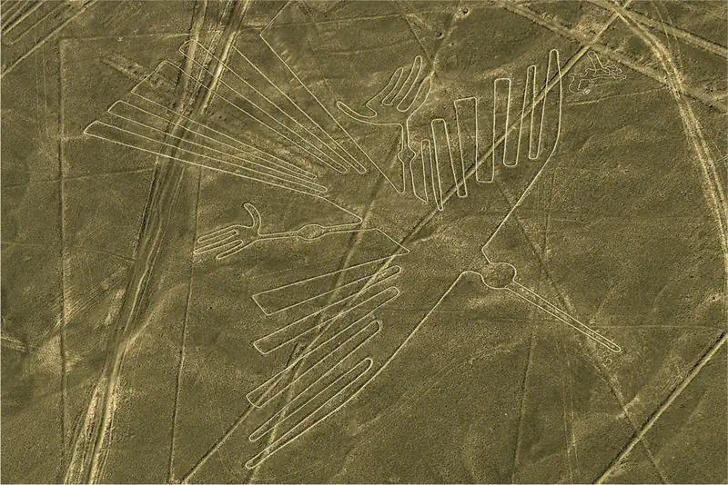
Link to Learning
The Nazca Lines in Peru have baffled scholars for many years. Watch this video about the Nazca Lines to learn more about how some are trying to understand these giant geoglyphs today.
Whereas the Nazca lived in the arid coastal desert, the Tiwanaku civilization thrived high in the mountains near Lake Titicaca. Like the Moche and Nazca societies, this culture emerged in the wake of the collapse of Chavín culture around 200 BCE. Beginning around 100 CE, it entered a period of sustained building at its key city of Tiwanaku. There, residents built two large stone structures topped by additional buildings and carved stone artwork. A signature feature of the structures at Tiwanaku is the many “trophy heads” that poke out from among the stone blocks (Figure 8.24). Noting the different facial features on each head, some scholars have concluded that they represent important ancestors of the Tiwanaku elite or possibly the gods of various conquered groups.
![A photo of a long wall is shown along a beige sidewalk with brick edges next to a gravely beige road. A bright cloudy sky shows in the top background. The wall shows square and rectangle shaped bricks of various sizes in a variety of shades of red, pink, and orange divided into sections by four rounded rectangular large stones in pink and gray colors. Some stones project out of the wall along the lower portion in white and beige colors. Three large arched stones can be seen inlaid along three sections of the wall. A large brick structure is seen behind the wall as well as some mountains in the far right distance.](img/osx-worldhist-a08-02-tiwanaku.webp)
At its height, the city supported perhaps as many as forty thousand people and oversaw at least four smaller cities in the surrounding area. It may even have been the center of a type of imperial system, with colonies on both the Pacific coast and the eastern side of the Andes. To support Tiwanaku and the other related cities, the people irrigated massive fields with a network of canals to grow potatoes. They also raised domesticated llamas and used them as pack animals for long-distance trade.
Tiwanaku survived until about 1000 CE and may have declined as the water level in Lake Titicaca rose to flood its farmland. The other civilizations of this period—the Moche and the Nazca—had disappeared long before, between 500 and 600 CE, for reasons that likely included environmental transformations. Other Andean civilizations emerged in their wake, including the Wari of the highlands of southeastern Peru and the Chimor of coastal Peru. These later groups built upon the earlier cultures’ innovations in agriculture, art, manufacturing, and trade. While Wari declined around 800 CE, Chimor survived into the fifteenth century. It was only in the 1400s that Chimor was conquered by a new and expanding imperial system, the Inca.
North America in the Formative Period¶
The earliest complex societies in North America began to emerge in the Ohio River valley around 1000 BCE, at the start of the Formative period, when mound-building cultures with large populations in the Eastern Woodlands became more common.
Mound-Building Cultures in the Eastern Woodlands¶
The mound-building culture of the Ohio River valley area is often referred to as the Adena, after a mound excavated in 1901 in Ross County, Ohio. This and the hundreds of others discovered in the area were burial sites. They started small, with the burial of one or two important people, but grew over time as more were buried and more earth was used to cover them. Some of the mounds had a large circular ditch surrounding them and logs lining the interior. Evidence of postholes indicates that structures once stood there as well, suggesting the locations may have been meeting or ceremonial spots. The bodies of the dead themselves were often decorated with red ocher and other pigments. Grave objects included jewelry, weapons, stone tools, marine shells, and pipes for smoking kinnikinnick (a mixture of leaves and bark) and perhaps tobacco (Figure 8.25).
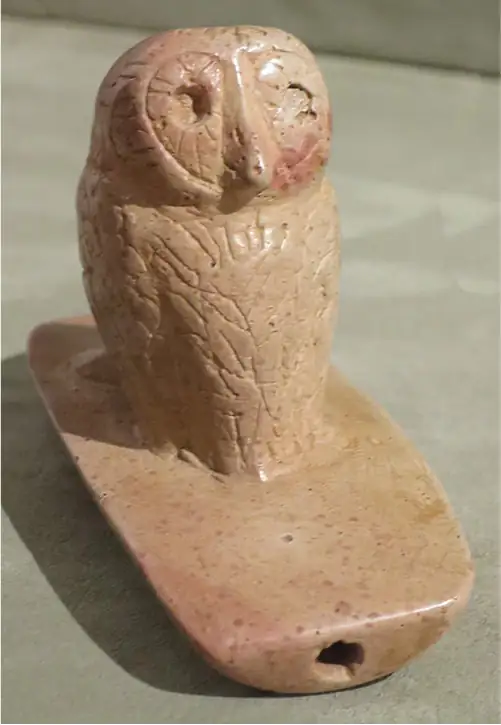
Communities of mound builders in the valley remained small at first, sometimes erecting no more than a couple of structures. The mounds themselves were also relatively small when compared with those of later cultures like the Hopewell tradition, a civilization that emerged around 200 BCE and eventually spread across the Eastern Woodlands through a common network of trade routes. Named for a large earthwork complex occupying 130 acres in today’s Ohio, the Hopewell tradition emerged around 200 BCE and is one of the most impressive of many of this period in the Woodlands. The site encloses thirty-eight different mounds within a large earthen D-shaped rectangle. The largest are three conjoined mounds; before centuries of erosion occurred, together they measured about five hundred feet wide and thirty feet high. Large platforms once supported wooden structures and were likely used for ritual purposes.
Another Hopewell site located near Newark, Ohio, is equally impressive, with earthen enclosures, mounds, and an observation circle all organized to align with the movement of the moon and likely used to predict lunar eclipses and other seasonal events. Building such mounds with the available technology would have been a labor-intensive task and indicates the culture responsible was highly organized.
The mound complexes were used for ceremonial purposes and do not appear to have been the site of urban settlements. Instead, most people of the Hopewell culture lived in small dispersed communities consisting of only a few extended families. They employed both hunter-gatherer strategies and the cultivation of domesticated plants like sunflowers and bottle gourds. Neighboring groups likely came together to participate in hunting, gathering, and religious events at their ceremonial sites. Religious traditions included the veneration of ancestors, such as those buried in the mounds.
Different communities from the wider area buried their dead leaders in the same mounds, likely as a way to establish symbolic connections across kin groups. Evidence from sites like the one at Newark suggests that ceremonies for burial and veneration were probably connected to seasonal changes and important astronomical observations. The items deposited in the mounds included a number of artistic depictions of animals like beavers, bears, dogs, cats, and even supernatural mixtures of these. These likely had symbolic importance for the individual kin groups and were connected to both their religious practices and specific ancestral ceremonies.
Politically, the settlements of the Hopewell tradition were decentralized and mostly egalitarian. The leadership structure of individual kin groups may have revolved around shamans or shamanistic practices, but there were no powerful rulers. There were, however, some divisions of labor based on specialization, including healers, clan leaders, and those who possessed certain spiritual qualities necessary for interpreting astronomical signs, preparing burials, and preserving important religious traditions. Ceremonial objects made of copper, bone, stone, and wood and shaped into bird claws and totem animals aided shamanistic figures in their duties and were often buried with them. Items within the mounds also provide evidence of extensive long-distance trading. Those discovered in the Ohio River valley include copper from Lake Superior, quartz from Arkansas, mica from the Appalachian region, marine shells from the Gulf coast, and obsidian from as far away as the Rocky Mountains. Trade in these objects was carried out by individuals moving along rivers or the networks of village paths.
Beyond the Book: Turtle Island
The earthen mounds of the Eastern Woodlands region had a number of symbolic meanings and purposes. They served as burial sites, provided connections to ancestors, and were settings for religious rituals. But what do ancient stories suggest about these mounds? Because the Native Americans who built them did not leave behind written records, their legends are one tool modern scholars can use to understand their symbolic importance.
Consider one of the ancient origin stories common to many Indigenous groups of the Eastern Woodlands. Preserved orally in numerous versions, it tells of the construction of the world by the accumulation of earth upon the shell of a large turtle, which grew over time and supported life. Some versions of the story begin with a great flood, after which animals work diligently to bring up earth from below the water to place on the turtle’s back. Other versions refer to a woman with supernatural powers who falls or travels from the heavens and creates the world on a turtle’s back (Figure 8.26). Across all the versions, the symbolic importance of the turtle, representing life, is paramount.
![A highly colorful painting is shown. At the top, a field is shown of yellow and green with four log cabins and green trees. The sky is hazy blue and mountains can be seen in the far distance. In the middle of the field a figure in a red shirt and cap bends over a fallen tree looking at the roots sticking out. Below the roots a hole leads to the next portion of the painting where a figure is seen falling head first down from the hole in golden rays matching the landscape above. Blue and white wavy colors surround the rays and to the right a dog-like animal is seen heading toward the figure with orange and gold lines behind them in the sky. Below the falling figure there are ten birds flying around with black and yellow wings, long thin dark necks, and white underbellies. Below the birds, water is seen with a large turtle-like animal in the water. The animal has a green and yellow shell divided into squares and a long neck holding a very tiny head. Another similar very small animal swims nearby. The rays from above reflect in the water around the animals creating a yellow brilliance on the water.](img/osx-worldhist-a08-02-turtleisl.webp)
While we cannot know for sure, the Woodlands mounds may have been connected to this ancient origin story. They certainly would have provided safety from river flooding in low-lying areas. During such times, the connection between the mound and the turtle floating in the water would have been difficult to miss.
- What purpose do you think origin stories like these served for the ancient people of the Eastern Woodlands?
- Do you think using preserved origin stories is a good way to understand ancient peoples and customs? Why or why not?
The Hopewell tradition settlements began to decline in the fourth century CE, evidenced by a waning of mound building and trade. The precise reason is not clear, but larger kin group alliances may have broken down as a result of underlying religious issues. Beginning around 600, groups in the Midwest built a number of so-called effigy mounds. These are earthen mounds formed in the image of animals like wolves, bears, snakes, and birds. Like many earlier mounds, the effigy mounds were also burial sites, but they usually contained only a few individuals. In comparison to the earlier Hopewell mounds, they were generally constructed with less labor and in a shorter amount of time, possibly by just a few dozen people working for a few days.
Early Cultures of the American Southwest¶
Far to the west of the mound-building cultures, a very different cultural tradition formed in the arid landscape of the Southwest. Here, people began experimenting with maize varieties as early as the third millennium BCE. By that time, some groups in the region had begun planting maize in small plots along riverbanks and using it to supplement their hunter-gatherer existence. Exactly how maize reached the American Southwest from southern Mexico is not clear, but there must have been some sporadic contact between cultivators in the south and hunter-gatherer adopters farther north. However, for many centuries after maize was introduced into the Southwest, its cultivation remained limited to one small part of a lifestyle firmly rooted in hunting and gathering. It is possible that the arid conditions of the region necessitated greater mobility and thus made the advantages of maize cultivation less obvious.
Some of the earliest evidence of maize cultivation in the area dates from about 2250 BCE and comes from what is now northwestern New Mexico. By around 1200 BCE, groups in the Las Capas area, by the Santa Cruz River near modern Tucson, Arizona, had developed a sophisticated irrigation system for cultivating maize. The people at Las Capas built a network of canals that directed water from the river into their fields. Around this agricultural base, they constructed oval-shaped homes and pits for roasting the maize they grew. Over time, the homes became more elaborate and were organized in rings around courtyards. But even here the cultivation of maize remained only a small part of a largely hunter-gatherer lifestyle, which included gathering goosefoot and piñons as well as hunting rabbits, bison, and deer.
By around 500 BCE, the cultivation of beans was adding to the growing diversity of foods consumed in the Southwest. This change helped to encourage more dependence on maize since, nutritionally speaking, these two foods are complementary—beans are a source of lysine, a necessary amino acid that maize lacks. Growing beans with maize also increases the nitrogen in the soil and preserves its fertility for longer periods. However, even after the introduction of beans, settled and solidly agricultural communities in the Southwest did not begin to emerge until around 200 CE. Once they did, the region entered a transformational period that resulted in the development of the Anasazi or Ancestral Pueblo societies.
8.3 The Age of Empires in the Americas¶
Learning Objectives
By the end of this section, you will be able to:
- Describe the expansion of pre-Columbian civilizations like the Aztec and Inca
- Identify key features of the Aztec and Inca civilizations
- Identify key features of the Anasazi and Mississippian traditions in North America
The arrival of the Spanish at the end of the fifteenth century inaugurated a new age in the Americas, but in Mexico and Peru, the Spanish entered areas already under the control of large and sophisticated empires. The Inca in the Andes and the Aztecs in Mesoamerica were the cultural inheritors of thousands of years of civilizational development that included the heritage of the Moche, Nazca, and Tiwanaku in the Andes and the Olmec, Maya, and Teotihuacanos in Mesoamerica. Likewise, the Mississippian tradition chiefdoms of the Eastern Woodlands, where the early Spanish explorers also trod, were the product of ancient cultural and civilization developments going back to the mound-building traditions of Adena, Hopewell, and even earlier cultures.
The Aztec Empire¶
The early origins of the Aztecs are cloudy, partly because this culture did not have a fully developed writing system for chronicling its history. Instead, the Aztecs relied on artistic records and oral traditions passed from generation to generation. They also used codices, book-like records drawn on bark paper that combined both images and pictograms. Based on information from these sources, historians have been able to place Aztec origins within the context of the collapse of the Toltec civilization.
Link to Learning
Aztec codices are similar to modern books, but instead of words they use images and icons to relay oral traditions. An example is the Codex Mendoza that was created around the year 1541. By scrolling through its pages, you will see both Aztec pictograms and Spanish translations.
The Toltec were an earlier Mesoamerican culture that filled the power vacuum created by the decline of Teotihuacán. From their capital at Tula, the Toltec dominated central Mexico between the tenth and twelfth centuries CE. When their civilization collapsed internally or was possibly conquered, a number of nomadic and warlike groups descended into the area, one of which appears to have been the Aztecs. A new period of cultural transformation and violent wars followed. The Aztecs clearly excelled in these military conflicts, likely acting as mercenaries. Ultimately, they were permitted to settle on a collection of islands within a large but shallow ancient lake called Lake Texcoco, one of five contiguous lakes that once spread across the Valley of Mexico.
Beyond the Book: The Aztec Origin Story
Much of our information about the Aztecs was recorded by the Spanish after they arrived in the sixteenth century. This is problematic for historians because Spanish religious leaders and conquistadores destroyed Indigenous records, particularly those that seemed to have religious significance. Since the Europeans viewed the Indigenous people through their own worldview and transformed Mesoamerica politically and culturally, their written accounts are often an imperfect means for understanding this people. Only by carefully studying the records we have, including Spanish accounts and Aztec codices, have scholars been able to piece together the story the Aztecs told themselves and their subject peoples about their origins.
The word Aztec is derived from their mythical original home, Aztlan. According to the Aztecs’ own origin story, they migrated from Aztlan centuries before their rise to greatness in the Valley of Mexico. This long period of wandering in search of a new home included a number of important events, such as battles, encounters with sorcerers, significant tribal divisions, and the birth of important gods like Huitzilopochtli, the Aztec war god. The story culminates in a dramatic clash on the shore of Lake Texcoco. There the Aztec migrants faced an alliance of rebels who sought their destruction. They survived only because Huitzilopochtli intervened by sending his priests to kill the leader of the enemy alliance and rip out his heart. Huitzilopochtli then instructed the Aztec priests to throw the heart far into the lake. It landed on the island of Tenochtitlán and sprouted a cactus, on which an eagle holding a snake landed. This was where Huitzilopochtli said the Aztecs should settle and build their great city (Figure 8.27).
![A picture of a drawing is shown on beige colored parchment. A blue border made out of squares outlines the images within, except for the top left half, which shows some cursive writing in the beige spot. The squares are decorated with small circles and various images of animals and shapes. Inside the border, the top two thirds show a blue rectangle with a thick wavy border and a blue wavy “X” in the middle, creating four triangles. In the middle of the “X” a brown bird is seen with a black and yellow beak sitting atop a green three-pronged cactus in a brown pot with pink and white spikes all over and green, white, and pink flowers on top. In all four triangle sections of the rectangle figures are shown with white cloths tied behind their necks, sitting on a green striped pedestal, with long brown hair, and red and brown hats. All have objects tied to them by a thin black string and words written in black on their clothing. One lone figure in the left section is dark skinned and has no hat and sits on a gold decorated pedestal. The top portion has two figures sitting on either side of a green topped beige and white hut. Two blue and three green plants are seen and both figures have brown brushes ties to the back of their necks. In the left area, four figures are shown with three green plants and one blue plant. The items tied to them are an animal head, a body with a cactus head, a cactus, and a foot. The bottom triangle shows two figures, and two green plants and one blue plant. The items tied to the figures include shoes and a dolphin. There is also a round object shown with seven white circles shown inside and red, yellow, and brown strips on the sides. The triangle on the right shows two figures and three green plants and one blue plant. The items tied to the figures include a foot with an arrow through it and a plant. A skeleton head is also shown with a pole poked through it displayed on two poles and a platform. Below the “X” image, two nearly identical images are shown. A figure in a short shirt with black marks all over and wearing a small loincloth and red and white shoes stands holding a sword and a shield decorated with circles. Below them stands another smaller figure with a white short sleeved shirt and small loincloth with no shoes and holding a circle shield. To the right of both of these images is a white tiered building with stairs leading to a yellow tiered top with lines. Red marks and brown hook-like object are shown below the yellow portion. To its right a green object stands on a red bottom. Toward the bottom right is a blue upside down “T” object with brown hook-like items all over.](img/osx-worldhist-a08-03-aztecmig.webp)
While archaeological evidence contradicts some of this legend, origin stories do have special cultural and political significance. Not only did the Aztecs’ migration story reinforce the important idea that they had emerged from obscurity to dominate the world, but different leaders also curated the history regularly to demonstrate that their reign was the culmination of earlier events. In this way, the story could change over time to support different rulers, general Aztec dominance, and specific cultural practices.
- Why might the Aztecs have wanted to emphasize that they came from a distant land?
- What other practical purposes might such an origin story serve?
The Aztecs began constructing their home city of Tenochtitlán among the islands within Lake Texcoco around 1325. During the following century, they survived by trading goods they could produce as well as continuing to serve as mercenaries for the surrounding powers. In this way, they accumulated wealth and supplied themselves with stone, which they used to transform their small island settlement into a large and architecturally sophisticated city. After acquiring some influence in the region, they formed an alliance with two neighboring city-states, Texcoco and Tlacopan. Then, in 1428, this Triple Alliance launched a surprise attack on the powerful city-state of Atzcapotzalco and made itself the dominant regional power. Over the next several decades, the Triple Alliance, with the Aztecs at its head, expanded its control of central Mexico to include Oaxaca in the west, parts of modern Guatemala in the south, and the areas bordering the Gulf of Mexico. By 1502, the newly crowned emperor of the Aztecs, Moctezuma II, was ruling an expansive empire from his capital city of Tenochtitlán (Figure 8.28).
![Two maps are shown. The map at the top right shows Mexico with water to the east and west. The Gulf of California is labeled in the west, the Gulf of Tehuantepec in labeled south of Mexico and the Gulf Panama is labeled at the southern portion of the map. East of Mexico the Gulf of Mexico is labeled and southeast of that the Caribbean Sea is labeled. In the land to the north of Mexico these rivers are labeled from west to east: Colorado R., Rio Grande, Red R., Arkansas R., Mississippi R., and Ohio R. In the country of Nicaragua a mass of water is labeled Lake Nicaragua and south of that the Panama Canal is also labeled. The following countries are labeled from north to south with capitals marked with black stars: Mexico (capital: Mexico City), Belize (capital: Belmopan), Honduras (capital: Tegucigalpa), Guatemala (capital: Guatemala), Nicaragua (Managua), El Salvador (capital: San Salvador), Costa Rica (capital: San Jose), and Panama (capital: Panama). To the right in the water some islands are labeled, from north to south: Bahamas, Cuba (capital: Havana), Haiti, and Jamaica. The map to the bottom left shows an enlarged portion of southern Mexico. The Gulf of Mexico is labeled to the east and the Gulf of Tehuantepec shows in the south. A section in the lower portion of the map, along the southern hook of the Gulf of Mexico is highlighted green with the following cities labeled within the green: Tlapacoyan, Atzcapotzalco Tlacopan Texcoco, Tenochtitlan, Cuetlaxtlan, Tepeaca, Tepecoacuilco, Coyolapan and Cihuatlan. Cities labeled outside the green are: Oxtlipa, Tlapacoyan](img/osx-worldhist-a08-03-m-aztecemp.webp)
At its height in the early 1500s, Tenochtitlán had a population of at least 200,000 people. It was a massive island city with large causeways that connected it to the shores of the lake. Some of the city’s land had been made by human intervention, which included creating artificial agricultural islands called chinampas around the city that were crisscrossed by canals for irrigation and transportation. These chinampas produced food for the city’s occupants. Toward the center of the island where the land was more firm were the homes of the city’s occupants, made mostly of adobe with flat roofs and built around small courtyards. At the center of the island were large temples, a ball court, administration buildings, homes for the elite, and the palaces of the rulers. The most impressive of the temples was the Templo Mayor, which was expanded numerous times during its long history. By the early 1500s, it was a dual stepped pyramid standing about ninety feet tall (Figure 8.29). One side was dedicated to the city’s patron Tlaloc, the god of rain. The other side was dedicated to Huitzilopochtli, the god of war. Priests climbed a long staircase to the temple to perform important state rituals.
![A photo of varying sized building models is shown on a flat white surface and darker blue cloudy background. One large tiered structure shows in the middle back with orange colored lower tiers. Two separate tiered buildings sit atop the structure and show doors on the lowest tier. The left one shows vertical dark lines while the one on the right shows red coloring across the walls. In the forefront shorter and smaller more tiered structures are shown. All have lower orange colored plain tiers with tops tiers decorated with blue and red colors.](img/osx-worldhist-a08-03-templomay.webp)
One of the most important ceremonies performed at the Templo Mayor and other temples in Tenochtitlán was the ritual of human sacrifice. Like many Aztec traditions, this rite was widely practiced in Mesoamerica and had roots going back to the Olmec culture and likely earlier. Human sacrifices occurred on important days identified on the Aztec calendar and during the commemoration of new temples or the expansion of existing ones. Contemporary descriptions note that long lines of sacrificial victims were led up the steps to the temple platform. There they were laid on a sacrificial stone, where their chests were opened with a sharp flint or obsidian knife and their hearts removed by the executioner (Figure 8.30). The bodies were then tossed down the steps of the temple.
![An image is shown on a yellow background with a sun in the top left corner depicting a solemn looking face. In the image, a man is shown being held up over a six-tiered orange, brown, and yellow structure wearing a small loincloth. One person is holding him at each arm and each foot. The figures holding him up wear cloths tied around them, are barefoot, and have long dark hair. The two in the front are kneeling while the two in the back stand. The figure being held up shows a red hole in his chest with red blood pouring out. Above the figure a person in a while loincloth and white robe with long black hair stands holding a heart over the figure with blood dripping down.](img/osx-worldhist-a08-03-humansacrf.webp)
These rituals were closely tied to Aztec cosmology and the people’s understanding of their role in the universe. The gods were believed to participate in the practice of sacrifice and to have used it to create the world and perpetuate its existence (Table 8.2). They often needed the assistance of human beings, who were created to serve and feed them through human sacrifice and other means. The sacrifices were thought to ensure that the sun stayed in the sky, the harvests continued to be bountiful, illnesses were kept at bay, and the military power of the Aztecs remained supreme.
Table 8.2 The Aztec Gods
| Centeotl | The Aztec god of maize |
| Huitzilopochtli | The Aztec god of war |
| Quetzalcoatl | The “feathered serpent” and Aztec god of wind, dawn, merchants, and knowledge |
| Tlaloc | The Aztec god of rain |
| Coatlicue | The Aztec goddess of fertility and rebirth |
| Xiuhtecuhtli | The Aztec god of fire and creator of life |
Human sacrifice was also an important means of preserving and expanding the empire and keeping conquered territories in line, since sacrificial victims were often those captured in battle. Thus, the goal in warfare was often to seize the enemy alive. Aztec war had important ritual purposes too. In some instances, it could be highly theatrical and consisted of paired individuals fighting each other, rather than large armies. Young boys began training to serve in the Aztec military from an early age. They drilled regularly with javelins for throwing, leather-covered shields, and clubs fitted with obsidian blades. Until they were old enough and experienced enough to become warriors themselves, they worked in the service of veteran warriors (Figure 8.31).
![An image is drawn on an off-white background. A soldier stands facing to the right in white garments with red and white striped socks and sleeves. He wears a white helmet that goes under his chin and depicts a serpent head with eyes and teeth. Green and brown feathers come out of the helmet in the back. He holds a brown and yellow circle shield with seven black and white striped circles on the front and brown, red, green and yellow feathers coming out of the bottom. He holds a tall spear in his left hand. Behind him can be seen three tall red sticks with green feathers projecting from the top. A spear with a hand on it can be seen behind him and script can be seen written alongside his spear, from top to bottom.](img/osx-worldhist-a08-03-aztecwarr.webp)
The Aztec Empire also exacted tribute payments from its conquered territories. At its height, the empire consisted of thirty-eight provinces, each expected to submit specific tribute to the imperial capitals. Occasionally, regions that resisted incorporation into the empire were given harsh terms. More often, the type of tribute demanded was related to the location of the tribute state and the goods it typically produced. For example, the Gulf coast area was known for natural rubber production and was assessed a tribute payment of sixteen thousand rubber balls for use in the Aztec ball game. Locations much closer to the capitals commonly provided goods like food that were expensive to transport over long distances. Those much farther away might be expected to provide luxury goods the Aztec elite gave as gifts to important warriors. Typical tribute items included cloth, tools like knives and other weapons, craft goods of all types, and of course, food. Tribute items could also include laborers to work on larger imperial projects. The Aztec tribute system functioned much like a crude system of economic exchange. Goods of all types flowed into the centers of power and the hands of elites. But they also made their way to commoners, who benefited from the diversity of the items the system made available.
As a highly militarized society, Aztec culture prized perceived male virtues like bravery, strength, and fighting ability. Warriors were expected to sacrifice themselves to perpetuate the glory of the state. When they were successful in battle, they were adorned with rich cloth and celebrated by the masses. Aztec women operated within a more circumscribed world. They could not serve in the military or attain high positions within the state, yet they did not necessarily occupy a lower status than men. Rather, Aztec state culture emphasized the complementarity of women and men, with men expected to fill roles outside the home like farming and fighting and women responsible for domestic chores like cooking and weaving.
Aztec women thus often spent long hours grinding corn into meal and weaving clothing for the family. Their work could sometimes take them outside the home, such as to the markets where some gained considerable wealth as traders and served in leadership roles. As midwives and healers, women ensured that healthy children were born and that the sick were treated with medicines backed by centuries of knowledge about the medicinal properties of certain plants.
Aztec society was made up of a number of social tiers. At the bottom was a large number of enslaved people and commoners with no land. Above these were the commoners with land. Before the imperial expansion, landed commoners had some limited political power. However, within the imperial system they were relegated to providing food and service for the military. Above them were the many specialized craftspeople, merchants, and scribes. And above all commoners were the nobles, who used conspicuous displays of wealth to elevate themselves. They served in the most important military positions, on the courts, and in the priesthood.
The members of the Council of Four also came from the noble class. The council’s primary task was to select the Aztec emperor, or Huey Tlatoani, from the ranks of the nobility. The emperor occupied a position far above everyone else in Aztec society. His coronation included elaborate rituals, processions, speeches, and performances, all meant to imbue him with enormous power. Even high-ranking nobles were obliged to lie face down in his presence.
The Aztec rulers had not always been so powerful or elevated so far above the masses. Their great authority and the ceremony of their office increased with the expansion of the empire. By the coronation of Moctezuma II in 1502, the office of emperor had reached its height, as had the empire. The expansion of the preceding decades had slowed, and demands for tribute and captives for ritual sacrifice were taking their toll and stirring resentment in many corners of the empire. It was into this context that the first Spanish explorers came. They were able to exploit the weaknesses in the empire and eventually bring about a new Spanish-centered order built on top of the old Aztec state.
The Inca Empire¶
At around the same time the Aztec Empire was expanding across Mesoamerica, an equally impressive new civilization was on the rise in the Andes region of South America. Known today as the Inca, its cultural and technological roots extend back to the earlier Andean cultures of the Moche, Nazca, and Tiwanaku. The heart of what became the Inca Empire was the city of Cuzco, located more than eleven thousand feet above sea level in the central Andes and northwest of the shores of Lake Titicaca. But centuries before it became an imperial city, it was a relatively modest agricultural community where the predecessors of the Inca farmed potatoes and maize and raised llamas and guanacos.
According to one Andean tradition, the origin story of the Inca began with a great flood that displaced four brothers and their wives and sent them on a mission to find fertile land where they could settle. During the journey, one of the brothers acquired incredible and supernatural strength. Consumed with jealousy, the other brothers sealed him in a cave and left him to die. They continued on, somewhat remorseful, but on the outskirts of Cuzco, two were mysteriously turned to stone. This left only one brother, Ayar Manco, who reached Cuzco, dipped his golden cane into the ground, and founded the city (Figure 8.32).
![A drawing is shown of a figure inside a circle decorated on the perimeter with dark designs. Across the top of the circle words are seen: Aiarmanoo Capac Primer Rey Del Cuzco. Inside the circle on a dark blue background a figure faces to the right looking at an orange and green bird in his left hand. He is dark skinned, wears a gold crown with a bull head at the front with large horns. A gold circular earring hangs from his ear. His robe is richly decorated with orange, blue, black and yellow colors with gold stitching on the edges. Gold sleeves show from beneath his robe. In his right hand he holds a scepter with a gold pointy top. Behind him a brown furry animal sticks its tongue out and licks the robe. The animal’s ear is close to his body and he has a large snout. The bottom of the circle encasing the figure is decorated with black, blue and red designs.](img/osx-worldhist-a08-03-ayarmanco.webp)
The fantastical story of the Ayar brothers, with its descriptions of magic and supernatural events, is clearly partly fictional, and it is not the only origin myth about the Inca. However, it may preserve a kernel of truth about the early group that founded Cuzco, perhaps after some type of migration prompted by changes in climate. We may never fully know, but based on historical and archaeological evidence, we do know the people of Cuzco emerged as agricultural villagers by around 1000. Through both peaceful and violent means, they assumed a dominant position in the larger surrounding region. Over time, their numbers grew, and they became one of a number of small military powers in the Andean region, centered on the growing city of Cuzco. As master stonemasons, the Inca were capable of carefully carving stones so they fit tightly together (Figure 8.33). At its height in the early sixteenth century, Cuzco was an impressive stone city built high in the Andes.
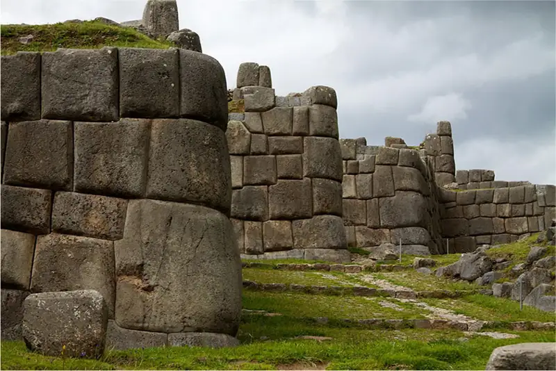
The leap to imperial expansion is explained by another Inca legend, this time telling of a military challenge from a rival group known as the Chanka and involving real historical figures. When the Chanka arrived at Cuzco, King Wiraqocha fled the city with his heir, leaving only a small group of nobles aligned with another son, Yupanki, to stand their ground. The defenders’ act of courage inspired the creator god of the Inca to intervene by transforming the surrounding stones into warriors who helped Yupanki defeat the Chanka. In the aftermath of the victory, the story goes on, Yupanki assumed the additional title of Pachacuti, meaning “cataclysm.” But the victory also led to an internal dispute between Pachacuti Yupanki and the reigning king, his father. This was ultimately resolved in Pachacuti Yupanki’s favor, and he assumed control of Cuzco and the Inca, whereupon he began a series of wars of expansion that gave birth to the Inca Empire.
While this story was partly contrived, there is no doubt that Inca expansion did occur, and Pachacuti appears to have been a real leader. The empire’s growth began in earnest around 1430 during his reign, and as king he oversaw the conquest of much of modern Peru. His successors, Thumpa and Wayna Qhapaq, further expanded the empire by adding territory far to the south in today’s Chile and Argentina, to the east in the edges of the Amazon basin, and to the north in Ecuador and Colombia. These wars were costly in lives and material, but they were also important for sharpening the skills of the Inca military.
Inca warriors wore helmets and cloth armor, carried shields, and were equipped with weapons like clubs, spears, slings, and axes (Figure 8.34). Typically, they could use their great numbers to overwhelm and awe the enemy into capitulation. If that failed, they rushed into the fray, often with little discipline but with great courageous resolve. Apart from the sheer power of numbers, the Inca military excelled in its ability to move swiftly along the empire’s complicated highland road systems to surprise the enemy and put down any emerging rebellions.
![A black and white drawing is shown of two groups of figures facing each other. At the left stand four figures in short robes, long hair, barefoot, holding spears in their hands. Behind them can be seen more heads and spears, but no details. At the right facing the first group stands a soldier in a short decorated robe, shoes, leg wraps, feathered helmet, and holding a shield. Behind him are two other soldiers in helmets and holding weapons and a shield. Above their heads can be seen spears, whips, and axes.](img/osx-worldhist-a08-03-incamilit.webp)
The empire created through conquest was divided into four administrative regions controlled by close relatives of the emperor (Figure 8.35). Each region was then broken down into a number of provinces, organized generally along ethnic lines and ruled by an imperial governor selected from the Inca nobility. A great variety of crops were produced across the empire including potatoes, coca, cotton, and maize. Surpluses were held in large storehouses to feed the armies and provide sustenance in times of famine. The subjects of the empire were also expected to provide labor for the construction of roads, bridges, palaces, and religious structures and to serve as messengers, transport food to storehouses, or serve in the military. Certain members of each household submitted their labor tax while others stayed home to manage the family’s affairs.
![A map of South America is shown with blue and gray lines crisscrossing all over the continent. The Pacific Ocean is labeled to the west and the Atlantic Ocean is labeled to the east. The equator crosses the northern part of the continent, and the Tropic of Capricorn crosses the middle of the continent. Along the northwestern coast a large rectangle area is highlighted orange and labeled “Chinchansuyu.” South of that along the coast is a small triangular shaped area highlighted yellow labeled “Cuntinsuyu.” Going east there is a long thin strip of land highlighted purple labeled “Antisuyu.” South of that is a large “Y” shaped area along the coast labeled “Collasuyu.”](img/osx-worldhist-a08-03-m-incaemp.webp)
In Their Own Words: Inca Quipus: Writing with String
Unlike the Maya, the Inca did not have a writing system that could be inked into a codex or carved in stone. But they did have an ingenious recordkeeping and communication system that relied on a portable device called a quipu (“kee-poo”), made of a great number of knotted strings (Figure 8.36).
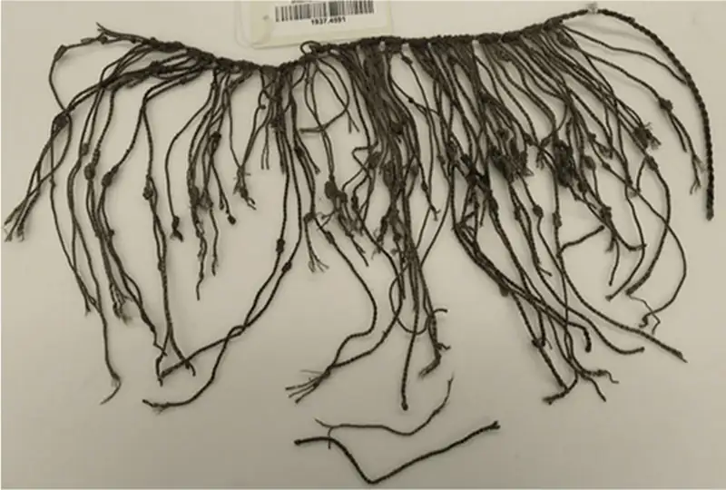
While many were destroyed by the Inca and later the Spanish, and much knowledge necessary to decipher them has been lost, surviving quipus have been carefully studied. They could record quantitative information like census and tax data, land allocations, the movements of armies, and astronomical observations. They also held qualitative information like ideas and possibly even poems. Different-colored strings and different types of knots that could be tied, untied, and retied made many thousands of combinations possible.
The Spanish were reluctant at first to believe that quipus accurately preserved information. The sixteenth-century explorer Pedro de Cieza de Léon reported:
“When I was at Marcavillca, in the province of Xauxa, I asked the lord Guacarapora to explain it in such a way as that my mind might be satisfied, and that I might be assured that it was true and accurate. He ordered his servants to bring the quipus, and as this lord was a native, and a man of good understanding, he proceeded to make the thing clear to me. He told me to observe that all that he, for his part, had delivered to the Spaniards from the time that the governor Don Francisco Pizarro arrived in the valley, was duly noted down without any fault or omission. Thus I saw the accounts for the gold, the silver, the clothes, the corn, sheep, and other things; so that in truth I was quite astonished. —Pedro de Cieza de Léon, The Second Part of the Chronicle of Peru, translated by Clements R. Markham”
According to Garcilasco de la Vega, born in the sixteenth century to Spanish and Inca parents, quipus could even record poems:
“They were composed in accordance with a fable they had, as follows: they say that the Creator placed a maiden, the daughter of a king, in the sky with a pitcher full of water which she spills when the earth needs it, and that one of her brothers breaks it occasionally, and the blow causes thunder and lightning. . . . The fable and verses, Padre Blas Valera says he found in the knots and beads of some ancient annals in threads of different colors. —Garcilasco de la Vega, Royal Commentaries of the Incas and General History of Peru, translated by Harold V. Livermore”
- Why might the Spanish have destroyed many quipus?
- How would you go about translating a quipu? What methods might you employ?
Apart from military violence and an organized imperial administration system, the Inca used religious symbolism to hold their empire together. A complex ritual calendar was overseen by religious experts whom the king and nobles regularly consulted before making political or military decisions. The Inca used human sacrifice in some rituals, but apparently not as readily as the Aztec of Mesoamerica. Among their most important deities was the sky god, who could manifest in a number of different forms such as the creator god Wiraqocha, the thunder god Illapa, and the sun god Inti. Inti was of particular importance because Inca rulers claimed direct descent from him. They constructed temples to Inti around the empire, encouraged his worship, and incorporated representations of conquered peoples into Inti’s key temple in Cuzco. In this way, the Inca cemented stronger ties between their rulers and the large and diverse empire they had created.
Link to Learning
In the fifteenth century, the Inca built a large palace complex high in the mountains above Cuzco that is now called Machu Picchu. You can tour the impressive ruins of Machu Picchu at this link.
One of the empire’s most important features, and one that held its expansive territory together, were the many roads and bridges that laced through its vast domains. Unlike the Aztec Empire, which expanded across a far more topographically consistent landscape, the Inca Empire included large mountain ranges, canyons, deserts, and narrow coastal valleys. Travel and communication were difficult in this extreme landscape and necessitated a technologically sophisticated road and bridge system. While elements of the network predated the Inca, it was under Inca rule that the larger network was expanded and greatly improved. At the height of the empire, the system may have included as many as twenty-five thousand miles of roads. These roads were as diverse as the landscape itself, including straight passages across flat land, winding paths and staircases around and up mountains, and numerous canyon-spanning bridges made of rope, stone, and wood (Figure 8.37). On them the Inca armies traveled, and goods produced in the provinces made their way to the imperial storehouses.
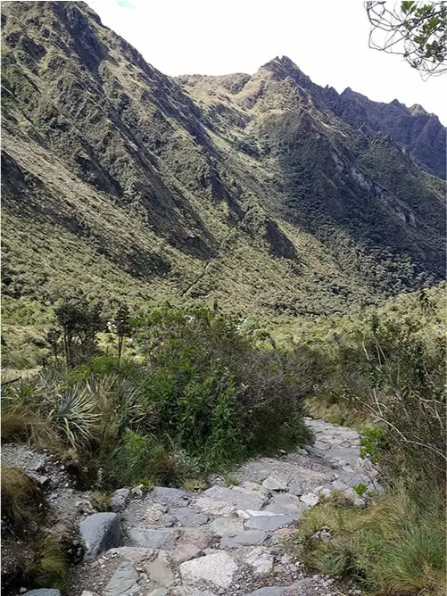
Like the Aztec Empire, the Inca Empire had just reached its height on the eve of the Spanish arrival in the early 1530s. Diseases brought by Europeans had already weakened it by then, even leading to the untimely death of Emperor Wayna Qhapaq in 1528. Just a few years later, the Spanish conqueror Francisco Pizarro reached Ecuador with his small army. There he found new Inca subjects eager to ally themselves with a possible enemy of the empire, while the Inca themselves were in the midst of a minor civil war over who would ascend the newly vacated throne. By 1532, the Spanish had entered the conflict and emerged masters of the empire, upon which they constructed their own system.
Complex Societies in North America¶
After many centuries of cultivating maize to supplement their hunter-gatherer lifestyle, around 500 BCE, groups in the American Southwest began to establish permanent villages supported by farming. Over the next few centuries, settled villages with permanent homes supplied with large storage pits for maize proliferated across the region. The agricultural peoples of these villages are often subdivided into three major cultural groups: the Mogollon tradition in the south, the Hohokam tradition in the west, and the Anasazi or Ancestral Pueblo tradition in the north (Figure 8.38). They were in contact with each other and shared a number of similarities. Their early settlements consisted of a number of oval and circular pit houses, partly underground and built of wooden poles covered in dried mud. These could be ventilated by rooftop openings accessible by internal ladders. Such homes were especially well suited to the sun-drenched environment and provided a cool escape from the hot outside temperatures. They also efficiently preserved heat during winter, when conditions could get exceedingly cold.
![A map is shown of an area of land. In the southwest corner the Pacific Ocean is labeled next to a thin slice of land highlighted green and labeled “Baja California Sur.” To the east of that is the Gulf of California. The states labeled in the map, from north to south, are: Utah, Nevada, Colorado, Arizona, New Mexico, and Texas. An oval section of the map comprised of eastern Nevada, southern Utah, southwestern Colorado, Northern Arizona and northwest New Mexico is highlighted green and labeled “Anasazi.” Within this green area the Colorado River is labeled as well as three areas with red triangles: Mesa Verde, Canyon de Chelly, and Chaco Canyon. To the west an oval area is highlighted purple. In southwestern Arizona an area is highlighted orange and labeled “Hohokam.” The city of Las Vegas, Phoenix, and Tucson are labeled with black dots and Montezuma Castle and Pueblo Grande are labeled with red triangles within this orange area. The southeastern corner of Arizona, the southwestern corner of New Mexico as well as a half circle shaped area below the states is highlighted green and labeled “Mogollon.” Within this area the cities of Las Cruces, El Paso, Ciudad Juarez, Hermosillo, and Ciudad Chihuahua are labeled with black dots. Labeled with red triangles are: Hawikuh, Gran Quivira, Gila Cliff Dwellings, Paquime, Cueva de la Olla, Trincheras, Cuarenta Casas, Cueva Grande, and Huapoca. Rivers labeled within this area are: Gila, Sonora, Yaquil, Conchos, and the Rio Grande. The southeastern portion of Colorado, the eastern portion of New Mexico, a small eastern portion of Texas, and the lands shown on the south of this map are all highlighted yellow. In the south, the areas are labeled: Chihuahua, Coahuila, Sinaloa, and Durango. Cities labeled within this yellow area, from north to south are: Pueblo, Santa Fe, Albuquerque, Odessa, and Torreon. The Arkansas River in Colorado is labeled, as well as the Pecos in New Mexico, and the Fuente east of the Gulf of California.](img/osx-worldhist-a08-03-m-southwes.webp)
Settlements varied in size from a handful of homes to as many as sixty. The design of the dwellings and the complexity of the settlements varied as well, with both generally increasing over time. By around 700, for example, large ceremonial meeting-house structures called kivas had become common in the central and northern areas. These were likely the local centers of religious ceremonies and civic life. In the centuries after 700, the settlements evolved into larger collections of multiroom structures built of dried adobe clay and stone. By 900, similar permanent settlements dotted the larger southwestern landscape, including in modern New Mexico, Arizona, Colorado, Utah, Texas, and the Mexican state of Chihuahua.
Some of the most impressive settlements that remain include Pueblo Bonito in New Mexico, Cliff Palace in Colorado, and Casas Grandes in Chihuahua. Pueblo Bonito in Chaco Canyon began to expand into the large masonry settlement visible in its ruins today around 800, when its residents abandoned their pit houses for the larger pueblo-style rooms. Pueblo architecture used stone or wooden frames covered in adobe clay. The houses and other buildings made in this way tended to have flat roofs that could be used as terraces.
At Pueblo Bonito, the houses were organized in a U-shape around the old pits from the pit houses, which were then used as kivas. This settlement reached its peak around 1000, which may have meant a modest population of about one hundred people, though its six hundred pueblo rooms could have housed as many as one thousand. In addition to being an important agricultural settlement, Pueblo Bonito was a major ceremonial center and likely attracted groups from the surrounding area for significant events. Some residents were clearly of particular importance, as indicated by the 130 burial sites and associated objects discovered there.
In addition to Pueblo Bonito, at least seventy other communities of varying sizes were scattered across the larger Chaco Canyon area. The total population of these settlements may have included as many as 5,500 people. Connections between them are suggested by shared pottery and architectural styles, and by the network of roads that pass through some settlements while radiating outward from the canyon like spokes on a wheel.
A long period of drought after 1130 led the residents of Chaco Canyon and Pueblo Bonito to abandon their settlements for other areas that promised sustenance. By about 1200, the old settlements were empty. Some eighty miles to the north in Mesa Verde, conditions were wetter and natural resources more plentiful, and groups there built a number of impressive cliffside dwellings. Construction of one of the largest settlements, today called Cliff Palace, began around 1190. Archaeologists believe this settlement was made as a defensive measure when competition for scarce resources was becoming more intense. Similar cliffside settlements were built in other places in the region for the same reason. Cliff Palace had twenty-three kivas and 220 rooms made of sandstone, mortar, and wood. They extend up the side of the cliff, some towering twenty-six feet tall (Figure 8.39). Like Pueblo Bonito, Cliff Palace also likely had a population of about one hundred people. And for just over a century, the settlement prospered, until expanding drought conditions forced the residents to abandon it and the many other Mesa Verde settlements around 1300.
![A photo is shown of a black and beige cliff at the top. Below the cliff are seen remains of stone buildings. The buildings run the length of the photo and are stacked in tiers of varying heights, They go deep into the canyon below the cliffs. Windows, and doors can be seen on the buildings, and walls are seen in varying sizes all over. Ten round areas set into the ground are seen toward the right of the canyon. A path is seen running the length of the photo along the front of the structures. Trees are seen at the right of the photo while bushes are seen along the bottom right where the ground dips down. At the left more canyon walls are seen.](img/osx-worldhist-a08-03-cliffpalac.webp)
Far to the south of Mesa Verde were the settlements of the Mogollon tradition. One of the more impressive is known today as Casas Grandes or Paquimé (Figure 8.40). Set in a flat arid portion of northern Chihuahua, Mexico, near the modern U.S. border, Casas Grandes emerged as an important agricultural settlement in the fourteenth century. Far more agriculturally productive than its northern Anasazi neighbors, Casas Grandes may have had a population of almost 2,300 people at its height. These people lived in adobe structures clustered close together and surrounded by a large enclosure wall.
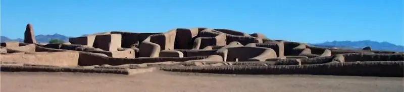
Because of its adobe design, Casas Grandes bears a superficial resemblance to some Anasazi communities. But the site actually has more in common with the Mesoamerican civilizations far to its south. For example, there are no kivas at Casas Grandes, but there are ruins of a large I-shaped Mesoamerican-style ball court. Among the valuable trading goods produced at Casas Grandes were colorful macaw feathers commonly used in Anasazi rituals. These indicate that trading networks existed between Casas Grandes and the Anasazi to their north. By the start of the fifteenth century, however, Casas Grandes was entering a period of decline; by the end of the century, it had been abandoned.
Around the same time that settled agricultural communities were becoming common in the Southwest, the Eastern Woodlands region was going through its own cultural transformations. On the former site of the Adena and Hopewell traditions, a new mound-building culture called the Mississippian tradition began to emerge around 700. This large and sophisticated culture constructed some of the biggest and most impressive of all the ceremonial mounds in the region.
The Mississippian tradition was apparently sparked by the adoption of maize agriculture from much farther south. Maize may have arrived in the Eastern Woodlands as early as 800 and was adopted by groups already accustomed to farming edible plants like sunflowers and bottle gourds. By 1000, its cultivation had become common throughout the region, even among groups that had not used agricultural techniques before. Bean cultivation was also spreading around the Eastern Woodlands, and at about the same time, people in the area began to use the bow and arrow, especially for hunting small animals like birds.
Combined, these changes brought about a major cultural shift in the Eastern Woodlands marked by the appearance of large settled agricultural communities and the spread of common cultural, architectural, and technological practices. A number of settlements arose throughout the Mississippi River valley and as far away as Georgia and Florida. Most were small chiefdoms built around one or just a few earthen mounds. Occasionally, smaller settlements were grouped into larger chiefdoms, and in a few important places, the settlements were exceptionally large, with populations in the thousands. Archaeological discoveries reveal that these settlements communicated and traded with each other, maintaining large trading networks that linked their many urban centers. Artifacts have been found many hundreds of miles from the site of their manufacture, and common architectural and artistic details suggest that cultural ideas too were disseminated far and wide.
The Mississippian site at Cahokia near modern St. Louis is possibly the most elaborate and important researched thus far. Earlier settlements nearby were smaller and date to about 600. But around 1050, the large urban center of Cahokia began to emerge, reaching its peak about 1250 before experiencing a gradual decline. At its height, Cahokia and its surrounding settlements covered nearly four square miles, had a population as large as sixteen thousand people, and included well over one hundred different mounds. At the center was a network of large mounds organized around a 100-foot-tall temple mound, built in stages with a wooden structure at its summit and a large staircase leading up from the surrounding plaza (Figure 8.41). Wood and thatch houses of various sizes radiated out from the central plaza and into the surrounding maize fields. Around the central complex of mounds and the homes of the elite was a large defensive wall, with watchtowers spaced at intervals around it.
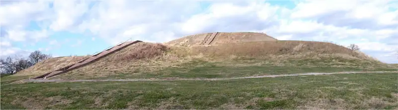
Other mounds at Cahokia served as burial mounds and platforms for ritual performances. Some of the rituals included human sacrifice, not unlike those common in Mesoamerica. One of the excavated mounds at the site contained the remains of several dozen sacrificial victims. At the base of this mound, archaeologists found the remains of two men, one buried face down, one face up. The man facing up had been placed on a bed of more than twenty thousand shells arranged in the shape of a large bird, suggesting that he was a particularly important person. Among the items buried with this “birdman” were hundreds of arrowheads, copper pieces, and a number of stones, elements of a ritual ball game called chunkey that may have had the same significance for the Mississippians as the rubber ball game had for Mesoamerican civilizations (Figure 8.42).
![An image of a painting is shown. In the painting a large group in standing in a circle in smaller clusters watching two figures in the middle throw long, thin sticks on a green grassy area with mountains in the far background and a green, yellow, and blue hazy sky. All of the figures are colored reddish and most wear just loincloths which blend in with their skin colors. Most have feathers in their hair. A group on the left holds long thin sticks as do a few in the group on the far right. Two figures in the middle wear long light colored robes with red designs. Some figures sit on the ground in the right forefront of the image. Dots represent eyes and short lines represent mouths on a few of the figures, but most show no facial features.](img/osx-worldhist-a08-03-chunkey.webp)
The “birdman’s” identity is not clear, but whether a leader, a shaman, or even an important warrior, he was a member of Cahokia’s elite. Cahokia and other large Mississippian settlements had a distinct nobility with access to luxury goods and a surplus of food produced by a large population of commoners who did agricultural work. Sites like Cahokia likely derived their power from their ability to exact tribute from surrounding groups, and from their control of long-distance trade routes that brought exotic items such as marine shells, rare stones, copper goods, and the feathers of colorful birds from distant lands.
Link to Learning
Learn more about the history and archaeological discoveries of Cahokia at the Cahokia Mounds Museum Society website. You can also explore an interactive map of Cahokia at this link.
Despite Cahokia’s obvious power, the settlement was relatively short-lived. By 1250, it had entered a period of decline, and ultimately it was abandoned. This did not mark the end of the Mississippian tradition itself, however. Sites like Moundville in Alabama, Etowah in Georgia, and many others bloomed in the wake of Cahokia’s demise. However, by about 1375, these large chiefdoms had begun to collapse as well. As the larger Mississippian tradition declined, so too did the long-distance trade routes. The people who had once lived at the large settlements became more dispersed across the Eastern Woodlands, leading to the emergence of a number of new groups. By the time the first Spanish explorers arrived in 1539, Cahokia was long gone. But from the records the Spanish kept, we know there were still a number of smaller chiefdoms scattered across the Eastern Woodlands. These were clearly different from the earlier Mississippian chiefdoms, but they still displayed many of the cultural traditions that had arisen centuries before.
Chapter Review¶
Key Terms¶
- Beringia
- a section of low-lying land between modern Alaska and Russia, now underwater, that once served as a land bridge between continents
- Clovis culture
- a culture consisting of mobile bands of hunter-gatherers who camped at resource-rich locations in modest populations across North America
- Hopewell tradition
- a widely dispersed mound-building tradition that emerged in the Eastern Woodlands around 200 BCE, linked by a network of trade routes
- Mississippian tradition
- a widely dispersed mound-building tradition that created a number of urban settlements linked by trading networks in the southeastern United States around 700
- Nazca Lines
- a group of geoglyphs made on the desert floor in southern Peru representing both geometric patterns and images of animals
- Norte Chico
- the culture of partially settled agricultural communities in the Andes region; also known as the Caral civilization
- Pueblo architecture
- a building style of the early American Southwest that relied on stone or wooden frames covered in adobe clay
- Triple Alliance
- an alliance formed in 1428 between the Aztecs and two neighboring city-states, Texcoco and Tlacopan
Summary¶
8.1 Populating and Settling the Americas¶
During the last glacial period, modern humans crossed Beringia and entered the Americas for the first time, migrating across North, Central, and South America. They relied on hunting large game and may have contributed to the extinction of some animals. Later they became more settled in a number of regions, adapting their hunter-gatherer strategies to their environments and the available resources.
About nine thousand years ago, groups like those in the Andes region began experimenting with animal domestication. Later they began to cultivate edible plants like squash, bottle gourds, and later the potato. In Mesoamerica, the shift to maize-based agriculture began at some point between 5000 and 3000 BCE. By around 2500 BCE, the use of domesticated maize had become more common and enabled the settlement of agricultural villages that combined the strategies of hunting and gathering with maize cultivation. Over time, the advantages of maize agriculture became more obvious, and exclusively sedentary agricultural communities emerged. In the Eastern Woodlands, a different agricultural tradition emerged independently by 2000 BCE. In each area, plant domestication allowed Neolithic settlements to begin, from which larger cultures and civilizations later grew.
8.2 Early Cultures and Civilizations in the Americas¶
The Olmec civilization formed around 1200 BCE and developed sophisticated religious traditions, a calendar system, and a ritual ball game. The Olmec influenced Mesoamerican cultures that followed, including the Zapotecs of Oaxaca, the Teotihuacanos of the Valley of Mexico, and the Maya of southern Mexico and Guatemala. By 300 BCE, Teotihuacán was among the largest cities in the world and controlled a vast trading network. By that time, a handful of powerful Maya city-states like Tikal, Calakmul, and El Mirador had grown to large urban centers and were using their own sophisticated writing and calendar system.
In the Andes region of South America, Chavín culture began expanding around 900 BCE, spreading its distinctive artistic and religious traditions. In the wake of the Chavín collapse in 200 BCE, new states like the Moche, the Nazca, and the Tiwanaku emerged and thrived in the Andes.
In North America, the complex societies of the Adena tradition emerged in the Ohio River valley around 1000 BCE and built a number of earthen burial mounds. This tradition was followed by other mound-building cultures like the Hopewell tradition. Very different traditions developed in the Southwest, where maize agriculture was incorporated into a largely hunter-gatherer existence as early as the third millennium BCE. But in this dry environment, settled and entirely agricultural communities did not begin to emerge until around 200 CE.
8.3 The Age of Empires in the Americas¶
In Mesoamerica in the fifteenth century, the Aztec Empire expanded to control central Mexico from its island city of Tenochtitlán. In addition to building large temples, ball courts, and palaces, the Aztec practiced human sacrifice as an important religious ritual. In the Andean region, the Inca Empire expanded to control a large swath of western South America from its capital at Cuzco, eleven thousand feet above sea level. The empire was created by trained warriors, employed a tribute system, and was held together by a vast network of roads through its largely mountainous terrain.
Intensive agriculture of maize in the Southwest and Eastern Woodlands led to enormous changes in both regions. By around 900, a number of settlements had grown in the Southwest, such as Pueblo Bonito in Chaco Canyon, the cliffside dwellings at Cliff Palace in Mesa Verde, and the larger Casas Grandes settlement in northern Mexico. In the Eastern Woodlands, the adoption of maize agriculture around 800 led to the rise of the Mississippian tradition and large agricultural communities across the Mississippi River valley. Most were small chiefdoms, but a few like Cahokia were exceptionally large, with populations in the thousands.
Review Questions¶
8.1 Populating and Settling the Americas¶
1.
2.
3.
4.
5.
6.
8.2 Early Cultures and Civilizations in the Americas¶
7.
8.
9.
10.
11.
12.
13.
8.3 The Age of Empires in the Americas¶
14.
15.
16.
17.
18.
Check Your Understanding Questions¶
8.1 Populating and Settling the Americas¶
19.
20.
8.2 Early Cultures and Civilizations in the Americas¶
21.
22.
8.3 The Age of Empires in the Americas¶
23.
24.
Application and Reflection Questions¶
8.1 Populating and Settling the Americas¶
25.
26.
8.2 Early Cultures and Civilizations in the Americas¶
27.
28.
8.3 The Age of Empires in the Americas¶
29.
30.
Adapted from World History, Volume 1, to 1500 by OpenStax, licensed under CC BY 4.0. Access the original for free at openstax.org. Changes: converted to the web reading format of The Open Book Project.